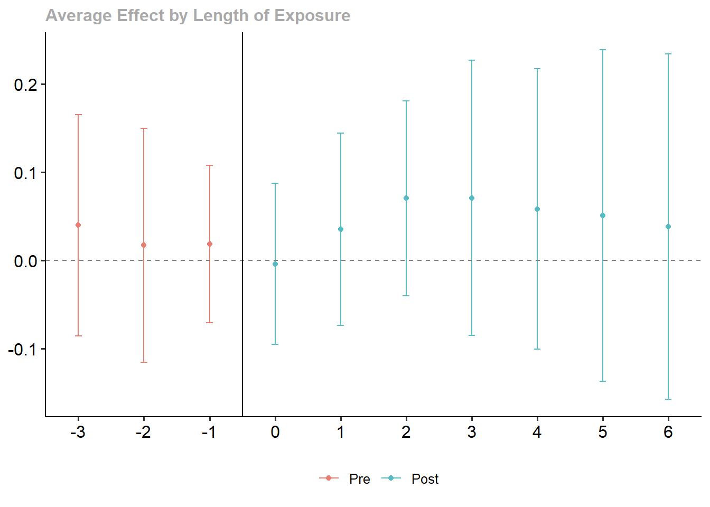
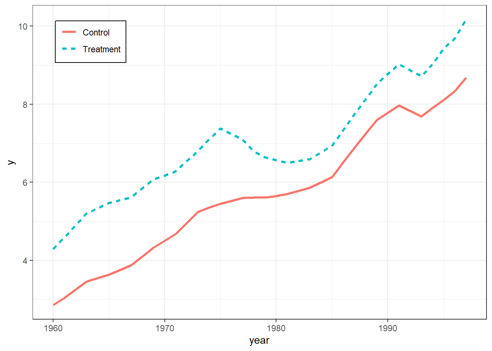
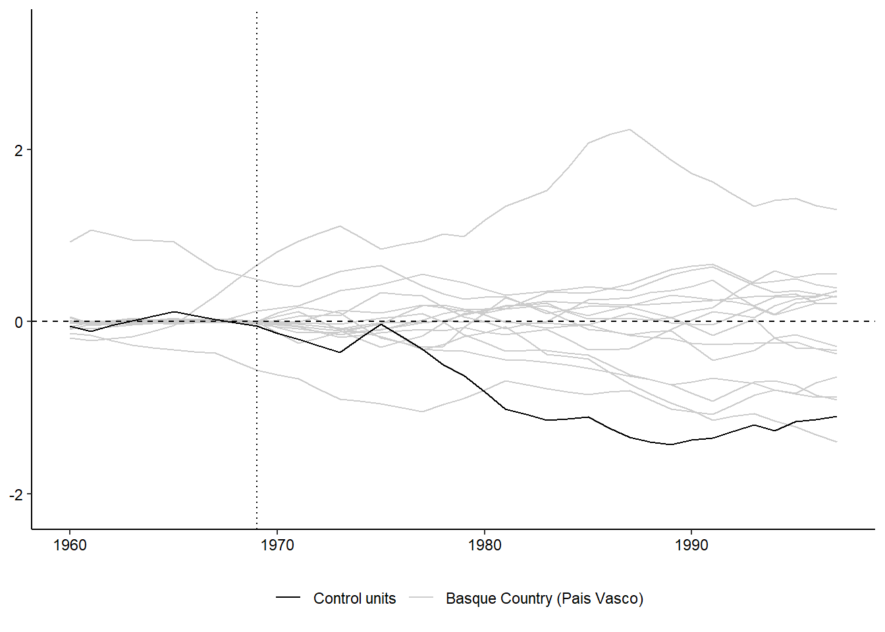

![]()
Code
pkgs <- c("plm", "feisr", "did", "Synth", "SCtools",
"panelView", "texreg", "tidyr", "dplyr", "ggplot2", "ggforce")
lapply(pkgs, require, character.only = TRUE)pkgs <- c("plm", "feisr", "did", "Synth", "SCtools",
"panelView", "texreg", "tidyr", "dplyr", "ggplot2", "ggforce")
lapply(pkgs, require, character.only = TRUE)sessionInfo()R version 4.3.1 (2023-06-16 ucrt)
Platform: x86_64-w64-mingw32/x64 (64-bit)
Running under: Windows 10 x64 (build 19044)
Matrix products: default
locale:
[1] LC_COLLATE=English_United Kingdom.utf8
[2] LC_CTYPE=English_United Kingdom.utf8
[3] LC_MONETARY=English_United Kingdom.utf8
[4] LC_NUMERIC=C
[5] LC_TIME=English_United Kingdom.utf8
time zone: Europe/London
tzcode source: internal
attached base packages:
[1] stats graphics grDevices utils datasets methods base
other attached packages:
[1] ggforce_0.4.1 ggplot2_3.4.2 dplyr_1.1.2 tidyr_1.3.0
[5] texreg_1.38.6 panelView_1.1.17 SCtools_0.3.2.1 future_1.33.0
[9] Synth_1.1-8 did_2.1.2 feisr_1.3.0 plm_2.6-3
loaded via a namespace (and not attached):
[1] tidyselect_1.2.0 farver_2.1.1 fastmap_1.1.1
[4] tweenr_2.0.2 fixest_0.11.1 digest_0.6.32
[7] lifecycle_1.0.3 dreamerr_1.2.3 magrittr_2.0.3
[10] kernlab_0.9-32 compiler_4.3.1 rlang_1.1.1
[13] tools_4.3.1 utf8_1.2.3 yaml_2.3.7
[16] data.table_1.14.8 collapse_1.9.6 knitr_1.43
[19] ggsignif_0.6.4 htmlwidgets_1.6.2 abind_1.4-5
[22] withr_2.5.0 purrr_1.0.1 numDeriv_2016.8-1.1
[25] polyclip_1.10-4 grid_4.3.1 rgenoud_5.9-0.3
[28] fansi_1.0.4 ggpubr_0.6.0 xtable_1.8-4
[31] lfe_2.9-0 colorspace_2.1-0 BMisc_1.4.5
[34] globals_0.16.2 scales_1.2.1 MASS_7.3-60
[37] cli_3.6.1 rmarkdown_2.23 miscTools_0.6-28
[40] generics_0.1.3 rstudioapi_0.14 httr_1.4.6
[43] bdsmatrix_1.3-6 parallel_4.3.1 vctrs_0.6.3
[46] Matrix_1.5-4.1 sandwich_3.0-2 jsonlite_1.8.5
[49] carData_3.0-5 car_3.1-2 rstatix_0.7.2
[52] Formula_1.2-5 listenv_0.9.0 optimx_2022-4.30
[55] glue_1.6.2 parallelly_1.36.0 codetools_0.2-19
[58] gtable_0.3.3 lmtest_0.9-40 munsell_0.5.0
[61] tibble_3.2.1 pillar_1.9.0 htmltools_0.5.5
[64] R6_2.5.1 maxLik_1.5-2 Rdpack_2.4
[67] evaluate_0.21 lattice_0.21-8 rbibutils_2.2.13
[70] backports_1.4.1 broom_1.0.5 Rcpp_1.0.10
[73] gridExtra_2.3 nlme_3.1-162 xfun_0.39
[76] zoo_1.8-12 pkgconfig_2.0.3 Fixed Effects Individual Slopes
Dynamic treatment effects
Dynamic Diff-in-Diff
Synthetic Control
TBD: Generalized Synthetic Control
Remeber that we have to make the parallel trends assumption in twoways FE models. A violation of the parallel trends assumption leads to biased estimates. Usually, when controlling for time fixed effects, we make the assumption that every observation experiences the same “effect of time”.
However, we can relax this assumption by giving each individual their own intercept and their own slope.
The fixed effects individual slope (FEIS) estimator is a more general version of the well-known fixed effects estimator (FE), which allows to control for heterogeneous slopes in addition to time-constant heterogeneity (e.g. Brüderl and Ludwig 2015; Polachek and Kim 1994; Rüttenauer and Ludwig 2023; Wooldridge 2010). Formally, the FEIS estimator can be expressed as
\[ \begin{align} \boldsymbol{\mathbf{y}}_{i} =& \boldsymbol{\mathbf{X}}_{i}\boldsymbol{\mathbf{\beta }}+ \boldsymbol{\mathbf{W}}_i \boldsymbol{\mathbf{\alpha}}_i + \boldsymbol{\mathbf{\epsilon}}_{i}, \end{align} \] where \(\boldsymbol{\mathbf{y}}_{i}\) is \(T \times 1\), \(\boldsymbol{\mathbf{X}}_{i}\) is \(T \times K\), and \(\boldsymbol{\mathbf{\epsilon}}_{i}\) is \(T \times 1\). \(\boldsymbol{\mathbf{W}}_i\) is a \(T \times J\) matrix of slope variables, and \(\boldsymbol{\mathbf{\alpha}}_i\) a \(J \times 1\) vector of individual-specific slope parameters, for \(J\) slope parameters including a constant term. If \(\boldsymbol{\mathbf{W}}_i\) consists of a constant term only, \(\boldsymbol{\mathbf{W}}_i = \boldsymbol{\mathbf{1}}\), thus \(\boldsymbol{\mathbf{\alpha}}_i\) reduces to \(\alpha_{i1}\), and the above equation represents the well-known formula of a conventional FE model with individual fixed effects.
As with the conventional FE, FEIS can be estimated using lm() by including \(N-1\) individual-specific dummies and interaction terms of each slope variable with the \(N-1\) individual-specific dummies (\((N-1) *J\) controls). This is however highly inefficient. As with the conventional FE estimator, we can achieve the same result by running an lm() on pre-transformed data. Therefore, specify the ‘residual maker’ matrix \(\boldsymbol{\mathbf{M}}_i = \boldsymbol{\mathbf{I}}_T - \boldsymbol{\mathbf{W}}_i(\boldsymbol{\mathbf{W}}^\intercal_i \boldsymbol{\mathbf{W}}_i)^{-1}\boldsymbol{\mathbf{W}}^\intercal_i\), and estimate \[
\begin{align}
y_{it} - \hat{y}_{it} =& (\boldsymbol{\mathbf{x}}_{it} - \hat{\boldsymbol{\mathbf{x}}}_{it})\boldsymbol{\mathbf{\beta }}+ \epsilon_{it} - \hat{\epsilon}_{it}, \\
\boldsymbol{\mathbf{M}}_i \boldsymbol{\mathbf{y}}_i =& \boldsymbol{\mathbf{M}}_i \boldsymbol{\mathbf{X}}_i\boldsymbol{\mathbf{\beta }}+ \boldsymbol{\mathbf{M}}_i \boldsymbol{\mathbf{\epsilon}}_{i}, \\
\tilde{\boldsymbol{\mathbf{y}}}_{i} =& \tilde{\boldsymbol{\mathbf{X}}}_{i}\boldsymbol{\mathbf{\beta }}+ \tilde{\boldsymbol{\mathbf{\epsilon}}}_{i},
\end{align}
\] where \(\tilde{\boldsymbol{\mathbf{y}}}_{i}\), \(\tilde{\boldsymbol{\mathbf{X}}}_{i}\), and \(\tilde{\boldsymbol{\mathbf{\epsilon}}}_{i}\) are the residuals of regressing \(\boldsymbol{\mathbf{y}}_{i}\), each column-vector of \(\boldsymbol{\mathbf{X}}_{i}\), and \(\boldsymbol{\mathbf{\epsilon}}_{i}\) on \(\boldsymbol{\mathbf{W}}_i\).
Intuitively, we
estimate the individual-specific predicted values for the dependent variable and each covariate based on an individual intercept and the additional slope variables of \(\boldsymbol{\mathbf{W}}_i\),
‘detrend’ the original data by these individual-specific predicted values, and
run an OLS model on the residual (‘detrended’) data.
Similarly, we can estimate a correlated random effects (CRE) model (Chamberlain 1982; Mundlak 1978; Wooldridge 2010) including the individual specific predictions \(\hat{\boldsymbol{\mathbf{X}}}_{i}\) to obtain the FEIS estimator: \[ \begin{align} \boldsymbol{\mathbf{y}}_{i} =& \boldsymbol{\mathbf{X}}_{i}\boldsymbol{\mathbf{\beta }}+ \hat{\boldsymbol{\mathbf{X}}}_{i}\boldsymbol{\mathbf{\rho }}+ \boldsymbol{\mathbf{\epsilon}}_{i}. \end{align} \]
Although we are here mainly interested in controlling for individual time, FEIS can be used to control for individual specific effects of any covariate. For instance, Rüttenauer and Ludwig (2023) discuss an example of controlling for family-specific pre-treatment conditions in a sibling study on the effect of participating in pre-school programs on later life outcomes.
As an example, we use the mwp panel data, containing information on wages and family status of 268 men. This is a random sample drawn from the National Longitudinal Survey of Youth (NLSY79, n.d.), and more details on the selection of observations and variable construction can be found in Ludwig and Brüderl (2018).
data("mwp", package = "feisr")
head(mwp) id year lnw exp expq marry evermarry enrol yeduc age cohort
1 1 1981 1.934358 1.076923 1.159763 0 1 1 11 18 1963
2 1 1983 2.468140 3.019231 9.115755 0 1 1 12 20 1963
3 1 1984 2.162480 4.038462 16.309174 0 1 1 12 21 1963
4 1 1985 1.746280 5.076923 25.775146 0 1 0 12 22 1963
5 1 1986 2.527840 6.096154 37.163090 0 1 1 13 23 1963
6 1 1987 2.365361 7.500000 56.250000 0 1 1 13 24 1963
yeargr yeargr1 yeargr2 yeargr3 yeargr4 yeargr5
1 2 0 1 0 0 0
2 2 0 1 0 0 0
3 2 0 1 0 0 0
4 2 0 1 0 0 0
5 3 0 0 1 0 0
6 3 0 0 1 0 0The data set contains a unique person identifier (id) and survey year indicator (year). Furthermore, we have information about the log hourly wage rate (lnwage), work experience (exp) and its square (expq), family status (marry), enrollment in current education (enrol), years of formal education education (yeduc), age (age), birth cohort (cohort), and a grouped year indicator (yeargr).
we exemplary investigate the ‘marriage wage premium’: we analyze whether marriage leads to an increase in the hourly wage for men. We use the function feis to estimate fixed effects individual slope models to control for the hypothesis that those men who are more likely to marry or marry earlier, also have a steeper wage growth over time.
Let’s start with our most common panel models (FE and RE):
wages.fe <- plm(lnw ~ marry + enrol + yeduc + as.factor(yeargr)
+ exp + I(exp^2), data = mwp, index = c("id", "year"),
model = "within", effect = "individual")
wages.re <- plm(lnw ~ marry + enrol + yeduc + as.factor(yeargr)
+ exp + I(exp^2), data = mwp, index = c("id", "year"),
model = "random", effect = "individual")
summary(wages.fe)Oneway (individual) effect Within Model
Call:
plm(formula = lnw ~ marry + enrol + yeduc + as.factor(yeargr) +
exp + I(exp^2), data = mwp, effect = "individual", model = "within",
index = c("id", "year"))
Unbalanced Panel: n = 268, T = 4-19, N = 3100
Residuals:
Min. 1st Qu. Median 3rd Qu. Max.
-2.5870006 -0.1580744 0.0081262 0.1701488 1.9958088
Coefficients:
Estimate Std. Error t-value Pr(>|t|)
marry 0.07773216 0.02160148 3.5985 0.0003256 ***
enrol -0.20810059 0.02282898 -9.1156 < 2.2e-16 ***
yeduc 0.05584485 0.00715655 7.8033 8.424e-15 ***
as.factor(yeargr)2 -0.14080625 0.03036533 -4.6371 3.694e-06 ***
as.factor(yeargr)3 -0.16453499 0.04696595 -3.5033 0.0004667 ***
as.factor(yeargr)4 -0.27553668 0.06196892 -4.4464 9.071e-06 ***
as.factor(yeargr)5 -0.29750723 0.07932341 -3.7506 0.0001800 ***
exp 0.07299927 0.00867777 8.4122 < 2.2e-16 ***
I(exp^2) -0.00127502 0.00036103 -3.5317 0.0004196 ***
---
Signif. codes: 0 '***' 0.001 '**' 0.01 '*' 0.05 '.' 0.1 ' ' 1
Total Sum of Squares: 559.75
Residual Sum of Squares: 327.88
R-Squared: 0.41424
Adj. R-Squared: 0.35697
F-statistic: 221.816 on 9 and 2823 DF, p-value: < 2.22e-16and we calculate panel robust standard errors and attach them back to the model output:
# Calculate vcov
vcovx_fe <- vcovHC(wages.fe, cluster = "group", method = "arellano", type = "HC3")
vcovx_re <- vcovHC(wages.re, cluster = "group", method = "arellano", type = "HC3")
# Replace original vcov in output
wages.fe$vcov <- vcovx_fe
wages.re$vcov <- vcovx_reReplacing the vcov in the model output has the advantage that we now use the cluster robust SEs in all following operations (like summary() or screenreg).
summary(wages.fe)Oneway (individual) effect Within Model
Call:
plm(formula = lnw ~ marry + enrol + yeduc + as.factor(yeargr) +
exp + I(exp^2), data = mwp, effect = "individual", model = "within",
index = c("id", "year"))
Unbalanced Panel: n = 268, T = 4-19, N = 3100
Residuals:
Min. 1st Qu. Median 3rd Qu. Max.
-2.5870006 -0.1580744 0.0081262 0.1701488 1.9958088
Coefficients:
Estimate Std. Error t-value Pr(>|t|)
marry 0.07773216 0.03160634 2.4594 0.0139771 *
enrol -0.20810059 0.02738300 -7.5996 4.015e-14 ***
yeduc 0.05584485 0.01025801 5.4440 5.656e-08 ***
as.factor(yeargr)2 -0.14080625 0.03554205 -3.9617 7.627e-05 ***
as.factor(yeargr)3 -0.16453499 0.05338645 -3.0820 0.0020763 **
as.factor(yeargr)4 -0.27553668 0.06829208 -4.0347 5.613e-05 ***
as.factor(yeargr)5 -0.29750723 0.08916462 -3.3366 0.0008591 ***
exp 0.07299927 0.01245954 5.8589 5.198e-09 ***
I(exp^2) -0.00127502 0.00057274 -2.2262 0.0260794 *
---
Signif. codes: 0 '***' 0.001 '**' 0.01 '*' 0.05 '.' 0.1 ' ' 1
Total Sum of Squares: 559.75
Residual Sum of Squares: 327.88
R-Squared: 0.41424
Adj. R-Squared: 0.35697
F-statistic: 77.9716 on 9 and 2823 DF, p-value: < 2.22e-16And finally, we allow for individual specific trends. To replicate the analysis of Ludwig and Brüderl (2018), we use work experience (exp) and squared work experience as the slope variables.
One mayor advantage of using work experience as slope is that we can still control for (grouped) time fixed effects
Assuming linear trends (only using exp), is a strong assumption. However, for each additional slope (e.g. polynomial), FEIS becomes more data hungry: each individual needs at least \(T \geq K + 1\) observations to contribute to the model. If not, they are dropped!
Here we use feis with panel robust standard errors. The command felm from lfe can be used to calculate individual slopes as well.
wages.feis <- feis(lnw ~ marry + enrol + yeduc + as.factor(yeargr)
| exp + I(exp^2), data = mwp, id = "id",
robust = TRUE)
summary(wages.feis)
Call:
feis(formula = lnw ~ marry + enrol + yeduc + as.factor(yeargr) |
exp + I(exp^2), data = mwp, id = "id", robust = TRUE)
Residuals:
Min. 1st Qu. Median 3rd Qu. Max.
-2.0790815 -0.1050450 0.0046876 0.1112708 1.9412090
Coefficients:
Estimate Std. Error t-value Pr(>|t|)
marry 0.0134582 0.0292771 0.4597 0.64579
enrol -0.1181725 0.0235003 -5.0286 5.325e-07 ***
yeduc -0.0020607 0.0175059 -0.1177 0.90630
as.factor(yeargr)2 -0.0464504 0.0378675 -1.2267 0.22008
as.factor(yeargr)3 -0.0189333 0.0524265 -0.3611 0.71803
as.factor(yeargr)4 -0.1361305 0.0615033 -2.2134 0.02697 *
as.factor(yeargr)5 -0.1868589 0.0742904 -2.5152 0.01196 *
---
Signif. codes: 0 '***' 0.001 '**' 0.01 '*' 0.05 '.' 0.1 ' ' 1
Cluster robust standard errors
Slope parameters: exp, I(exp^2)
Total Sum of Squares: 190.33
Residual Sum of Squares: 185.64
R-Squared: 0.024626
Adj. R-Squared: 0.022419Let’s compare the results.
screenreg(list(wages.re, wages.fe, wages.feis), digits = 3,
custom.model.names = c("RE", "FE", "FEIS"))
============================================================
RE FE FEIS
------------------------------------------------------------
(Intercept) 1.562 ***
(0.094)
marry 0.091 ** 0.078 * 0.013
(0.032) (0.032) (0.029)
enrol -0.202 *** -0.208 *** -0.118 ***
(0.025) (0.027) (0.024)
yeduc 0.063 *** 0.056 *** -0.002
(0.008) (0.010) (0.018)
as.factor(yeargr)2 -0.157 *** -0.141 *** -0.046
(0.034) (0.036) (0.038)
as.factor(yeargr)3 -0.197 *** -0.165 ** -0.019
(0.050) (0.053) (0.052)
as.factor(yeargr)4 -0.316 *** -0.276 *** -0.136 *
(0.066) (0.068) (0.062)
as.factor(yeargr)5 -0.349 *** -0.298 *** -0.187 *
(0.089) (0.089) (0.074)
exp 0.074 *** 0.073 ***
(0.012) (0.012)
exp^2 -0.001 * -0.001 *
(0.001) (0.001)
------------------------------------------------------------
s_idios 0.341
s_id 0.279
R^2 0.440 0.414 0.025
Adj. R^2 0.439 0.357 0.022
Num. obs. 3100 3100 3100
Num. groups: id 268
RMSE 0.285
============================================================
*** p < 0.001; ** p < 0.01; * p < 0.05Interpretation:
RE: Married observations have a significantly higher wage than unmarried observations.
FE: If people marry, they experience an increase in wages afterwards. The effect is significant and slightly lower than the RE.
FEIS: Accounting for the individual wage trend before marriage, we do not observe an increase in wages if people marry. The effect is small and non-significant.
Overall, this indicates that there is a problem with non-parallel trends: Those with steeper wage trajectories are more likely to marry (or marry earlier).
As mentioned above, we can achieve the same by 1) manually calculating the individual specific trends and 2) including them as additional covariates in the model.
### Individual predicted value of covariates
vars <- c("marry", "enrol", "yeduc",
"yeargr2", "yeargr3", "yeargr4", "yeargr5")
for(v in vars){
fm <- as.formula(paste(v, "~ exp + expq"))
pred_x <- by(mwp[, c(v, "exp", "expq")],
mwp$id,
FUN = function(z) predict(lm(fm, data = z)))
pred_x <- unlist(pred_x)
mwp[, paste0("pred_", v)] <- pred_x
}
head(mwp[, c("id", "pred_marry", "pred_enrol")], n = 20) id pred_marry pred_enrol
1 1 -0.12205318 1.206579223
2 1 -0.03068796 0.863033817
3 1 0.03926230 0.716309276
4 1 0.12611077 0.590568171
5 1 0.22664093 0.490467488
6 1 0.38990636 0.390403467
7 1 0.54837205 0.340389443
8 1 0.66317654 0.324200699
9 1 0.87480284 0.326554307
10 1 1.04489924 0.351640932
11 1 1.23957011 0.399853176
12 2 0.00000000 1.103938282
13 2 0.00000000 0.503880518
14 2 0.00000000 0.304456317
15 2 0.00000000 0.176757843
16 2 0.00000000 0.012061441
17 2 0.00000000 -0.105551709
18 2 0.00000000 0.004457309
19 3 0.00000000 0.000000000
20 3 0.00000000 0.000000000This gives us individual-specific predicted values of each covariate based on and intercept, exp and expsq. Note that - in contrast to person-specific means - these predicted values (can) vary within a person.
Do you know why person-id 2 has all zeros on the pre_marry variable?
Using these individual predicted values, we can retreive the FEIS estimates in a Mundlak-style model.
wages.lmfeis <- lm(lnw ~ marry + enrol + yeduc + as.factor(yeargr) +
pred_marry + pred_enrol + pred_yeduc +
pred_yeargr2 + pred_yeargr3 + pred_yeargr4 + pred_yeargr5,
data = mwp)
screenreg(list(wages.feis, wages.lmfeis), digits = 3,
custom.model.names = c("FEIS", "Manual FEIS"))
==============================================
FEIS Manual FEIS
----------------------------------------------
marry 0.013 0.013
(0.029) (0.043)
enrol -0.118 *** -0.118 **
(0.024) (0.037)
yeduc -0.002 -0.002
(0.018) (0.022)
as.factor(yeargr)2 -0.046 -0.046
(0.038) (0.055)
as.factor(yeargr)3 -0.019 -0.019
(0.052) (0.080)
as.factor(yeargr)4 -0.136 * -0.136
(0.062) (0.097)
as.factor(yeargr)5 -0.187 * -0.187
(0.074) (0.121)
(Intercept) 1.576 ***
(0.056)
pred_marry 0.269 ***
(0.048)
pred_enrol -0.238 ***
(0.048)
pred_yeduc 0.079 ***
(0.022)
pred_yeargr2 -0.061
(0.074)
pred_yeargr3 -0.012
(0.092)
pred_yeargr4 0.169
(0.110)
pred_yeargr5 0.347 **
(0.132)
----------------------------------------------
R^2 0.025 0.359
Adj. R^2 0.022 0.356
Num. obs. 3100 3100
Num. groups: id 268
RMSE 0.285
==============================================
*** p < 0.001; ** p < 0.01; * p < 0.05Note, however, that this manual approach will lead to incorrect standard errors!
Often, we are not only interested in the overall treatment effect, but we also want to know how treatment effects unfold after a treatment. For example, how does happiness change around specific life course events (Clark and Georgellis 2013), or how do housing prices develop after the opening of an industrial plant (Currie et al. 2015)?
There are various ways of calculating how a treatment effect develops over time:

Usually, it is best to not impose a structural form, but rather to use dummy impact functions. However, even with this, there is an ongoing debate on what is the best choice of specification (Ludwig and Brüderl 2021), or see for instance blog post by Pedro H. C. Sant’Anna and Brantly Callaway.
Note that these settings usually require a staggered treatment adoption: individuals are treated once, and afterwards remain treated
There are many cases where this does not apply. However, one can think about potential ways of artificially creating such designs:
Dichotomize continuous treatments (if theoretically plausible!)
Create id-period splits. E.g. if a person gets divorced, either drop from sample, or treat as a “new id” as a person can re-marry (note that this assumes that first and second marriage have equal effects).
We stick with our example and try to estimate how the wage changes around the year of marriage.
To do so, we first make sure the data is ordered by id and time
mwp <- mwp[order(mwp$id, mwp$year), ]
head(mwp[, 1:6], n = 20) id year lnw exp expq marry
1 1 1981 1.934358 1.0769231 1.1597635 0
2 1 1983 2.468140 3.0192308 9.1157551 0
3 1 1984 2.162480 4.0384617 16.3091736 0
4 1 1985 1.746280 5.0769229 25.7751465 0
5 1 1986 2.527840 6.0961537 37.1630898 0
6 1 1987 2.365361 7.5000000 56.2500000 0
7 1 1988 2.467478 8.6730766 75.2222595 1
8 1 1989 4.398027 9.4423075 89.1571732 1
9 1 1990 2.822144 10.7307692 115.1494064 1
10 1 1991 2.654965 11.6730766 136.2607117 1
11 1 1992 2.665088 12.6730766 160.6068726 1
12 2 1979 2.236233 0.9423077 0.8879438 0
13 2 1981 2.916389 2.9615386 8.7707109 0
14 2 1982 2.751646 3.8269231 14.6453409 0
15 2 1983 2.629372 4.4807692 20.0772915 0
16 2 1984 2.965442 5.5384617 30.6745586 0
17 2 1985 2.890669 6.6538463 44.2736702 0
18 2 1989 2.392579 11.1538458 124.4082794 0
19 3 1979 2.456405 1.1730769 1.3761094 0
20 3 1980 2.661142 2.1153846 4.4748521 0Then, we make sure that our data looks like a staggered treatment design. Are there people who jump from married to not married in the data?
# Change in marriage status within an id
mwp$fd_marry <- ave(mwp$marry,
mwp$id,
FUN = function(x) x - dplyr::lag(x, 1, default = 0)) # 0 insteat of NA for 1st year
# Mark observations starting with a negative fd value (jump from marry=1 to marry =0)
mwp$notstag_marry <- ave(ifelse(mwp$fd_marry == -1, 1, 0),
mwp$id,
FUN = function(x) cumsum(x))
table(mwp$fd_marry)
0 1
2896 204 table(mwp$notstag_marry)
0
3100 Luckily, the dataset is already cleaned: there are only transitions into marriage, not out of marriage.
Next we want to make sure if there are any individuals who already start with the treatment (who are married right from their first wave on).
We only want to have those in our sample who potentially can go from not-treated to treated!
mwp <- mwp[order(mwp$id, mwp$year), ] # just to be sure
# Person year number
mwp$pynr <- ave(mwp$year,
mwp$id,
FUN = function(x) 1:length(x))
# Marry status at first wave
mwp$f_marry <- ifelse(mwp$pynr == 1, mwp$marry, NA)
# Distribute across individual, using mean and na.rm = TRUE
mwp$f_marry <- ave(mwp$f_marry,
mwp$id,
FUN = function(x) mean(x, na.rm = TRUE))
table(mwp$f_marry)
0
3100 Again, someone has already done the job. There are no individuals who start married in the first wave.
We can also look at this graphically with panelView (mainly helpful for small N data):
panelview(lnw ~ marry,
data = mwp, index = c("id","year"),
type = "treat", theme.bw = TRUE)Time is not evenly distributed (possibly due to missing data).
Alright, so lets create a dummy impact function / a count variable around the treatment.
mwp <- mwp[order(mwp$id, mwp$year), ] # just to be sure!!
# Function that creates distance to the treatment (assuming 0=control, 1=treated)
impfun <- function(x, default = -99){
nas <- which(is.na(x)) #save nas
ft <- which(x == 1)[1] #first teatment index
if(is.na(ft)){ #replicate default if never treated
count <- rep(default, length(x))
}else{
ri <- 1:length(x) #running index
count <- ri - ft #distance to first treatment
}
if(length(nas) != 0){ #replace nas if any
count[nas] <- NA
}
return(count) #return counter
}
# Apply to each individual
mwp$marry_if <- ave(mwp$marry,
mwp$id,
FUN = function(x) impfun(x))
head(mwp[, c("id", "year", "marry", "marry_if")], n = 50) id year marry marry_if
1 1 1981 0 -6
2 1 1983 0 -5
3 1 1984 0 -4
4 1 1985 0 -3
5 1 1986 0 -2
6 1 1987 0 -1
7 1 1988 1 0
8 1 1989 1 1
9 1 1990 1 2
10 1 1991 1 3
11 1 1992 1 4
12 2 1979 0 -99
13 2 1981 0 -99
14 2 1982 0 -99
15 2 1983 0 -99
16 2 1984 0 -99
17 2 1985 0 -99
18 2 1989 0 -99
19 3 1979 0 -99
20 3 1980 0 -99
21 3 1981 0 -99
22 3 1982 0 -99
23 3 1983 0 -99
24 3 1984 0 -99
25 3 1985 0 -99
26 3 1986 0 -99
27 3 1987 0 -99
28 3 1988 0 -99
29 3 1989 0 -99
30 3 1993 0 -99
31 3 1994 0 -99
32 3 2000 0 -99
33 4 1979 0 -2
34 4 1981 0 -1
35 4 1982 1 0
36 4 1983 1 1
37 4 1984 1 2
38 4 1985 1 3
39 4 1986 1 4
40 4 1987 1 5
41 4 1988 1 6
42 4 1989 1 7
43 4 1990 1 8
44 4 1991 1 9
45 4 1992 1 10
46 4 1993 1 11
47 5 1979 0 -6
48 5 1980 0 -5
49 5 1981 0 -4
50 5 1982 0 -3We can now use this time count function to estimate dynamic treatment effects.
Note that we need to make to important decisions (blog post by Pedro H. C. Sant’Anna and Brantly Callaway):
Which dates to use a reference category
How many pre-treatment periods to include (to test for anticipation or potential pre-treatment differences)
Here, re will just include three periods before marriage and use the rest as reference categories
# Set all before -3 to -99
mwp$marry_if[mwp$marry_if < -3 & mwp$marry_if > -99] <- -99
# Make factor with -99 as reference category
mwp$marry_if <- as.factor(mwp$marry_if)
mwp$marry_if <- relevel(mwp$marry_if, "-99")And we use this as our treatment variable in the FE estimator.
# Standard marriage indicator
wages.fe <- plm(lnw ~ marry + enrol + yeduc + as.factor(yeargr)
+ exp + I(exp^2), data = mwp, index = c("id", "year"),
model = "within", effect = "individual")
# with dummy impact function
wages2.fe <- plm(lnw ~ marry_if + enrol + yeduc + as.factor(yeargr)
+ exp + I(exp^2), data = mwp, index = c("id", "year"),
model = "within", effect = "individual")
# add cluster robust SEs
vcovx_fe2 <- vcovHC(wages2.fe, cluster = "group", method = "arellano", type = "HC3")
wages2.fe$vcov <- vcovx_fe2
summary(wages2.fe)Oneway (individual) effect Within Model
Call:
plm(formula = lnw ~ marry_if + enrol + yeduc + as.factor(yeargr) +
exp + I(exp^2), data = mwp, effect = "individual", model = "within",
index = c("id", "year"))
Unbalanced Panel: n = 268, T = 4-19, N = 3100
Residuals:
Min. 1st Qu. Median 3rd Qu. Max.
-2.566752 -0.160001 0.010038 0.175003 2.011790
Coefficients:
Estimate Std. Error t-value Pr(>|t|)
marry_if-3 0.03388225 0.03253942 1.0413 0.2978411
marry_if-2 0.05166995 0.04238715 1.2190 0.2229466
marry_if-1 0.09151624 0.04265046 2.1457 0.0319803 *
marry_if0 0.08816919 0.05121551 1.7215 0.0852644 .
marry_if1 0.15544954 0.05601346 2.7752 0.0055530 **
marry_if2 0.15658061 0.06078860 2.5758 0.0100509 *
marry_if3 0.16687443 0.06762257 2.4677 0.0136564 *
marry_if4 0.14591461 0.07412203 1.9686 0.0491005 *
marry_if5 0.14033773 0.07930392 1.7696 0.0768992 .
marry_if6 0.15706194 0.08660097 1.8136 0.0698418 .
marry_if7 0.13008248 0.09727237 1.3373 0.1812327
marry_if8 0.11979150 0.10451397 1.1462 0.2518197
marry_if9 0.14007172 0.10390453 1.3481 0.1777412
marry_if10 0.11550144 0.11151584 1.0357 0.3004126
marry_if11 0.20483579 0.12281306 1.6679 0.0954538 .
marry_if12 0.10767466 0.12345702 0.8722 0.3831940
marry_if13 0.10542488 0.13897395 0.7586 0.4481589
marry_if14 -0.13934447 0.12815514 -1.0873 0.2769929
enrol -0.20477142 0.02737332 -7.4807 9.833e-14 ***
yeduc 0.05500238 0.01059840 5.1897 2.257e-07 ***
as.factor(yeargr)2 -0.13830215 0.03594278 -3.8478 0.0001218 ***
as.factor(yeargr)3 -0.16356110 0.05379641 -3.0404 0.0023847 **
as.factor(yeargr)4 -0.27248909 0.06839547 -3.9840 6.948e-05 ***
as.factor(yeargr)5 -0.28895919 0.08907335 -3.2441 0.0011922 **
exp 0.06728858 0.01357307 4.9575 7.565e-07 ***
I(exp^2) -0.00111675 0.00061151 -1.8262 0.0679250 .
---
Signif. codes: 0 '***' 0.001 '**' 0.01 '*' 0.05 '.' 0.1 ' ' 1
Total Sum of Squares: 559.75
Residual Sum of Squares: 325.96
R-Squared: 0.41767
Adj. R-Squared: 0.35686
F-statistic: 75.8727 on 26 and 2806 DF, p-value: < 2.22e-16Let’s plot that
# Set up results matrix
coef.df <- data.frame(matrix(NA,
nrow = (length(levels(mwp$marry_if)) - 1),
ncol = 3))
colnames(coef.df) <- c("time", "att", "se")
# paste results
coef.df$time <- c(-3:14)
output <- summary(wages2.fe)$coefficients
coef.df[, c("att", "se")] <- output[which(grepl("marry_if", rownames(output))), 1:2]
# 95% CI
interval2 <- -qnorm((1-0.95)/2) # 95% multiplier
coef.df$ll <- coef.df$att - coef.df$se*interval2
coef.df$ul <- coef.df$att + coef.df$se*interval2
# Plot
zp1 <- ggplot(coef.df[coef.df$time < 7, ],
aes(x = time, y = att)) +
geom_pointrange(aes(x = time, y = att, ymin = ll, ymax = ul),
lwd = 1, fatten = 2) +
geom_line(aes(x = time, y = att)) +
geom_hline(yintercept = 0, colour = gray(1/2), lty = 2, lwd = 1) +
geom_vline(xintercept = -0.5, colour = "black", lty = 1, lwd = 1) +
theme_bw()
zp1An interesting finding here. There is a positive anticipation effect: “The anticipation of marriage already increases the husbands wage”.
Is this plausible?
FEIS
Obviously, we can also use these dummy impact function in other estimators.
### FEIS with dummy impact function
wages2.feis <- feis(lnw ~ marry_if + enrol + yeduc + as.factor(yeargr)
| exp + I(exp^2),
data = mwp, id = "id",
robust = TRUE)
summary(wages2.feis)
Call:
feis(formula = lnw ~ marry_if + enrol + yeduc + as.factor(yeargr) |
exp + I(exp^2), data = mwp, id = "id", robust = TRUE)
Residuals:
Min. 1st Qu. Median 3rd Qu. Max.
-2.0385140 -0.1070148 0.0063363 0.1116305 1.9422823
Coefficients:
Estimate Std. Error t-value Pr(>|t|)
marry_if-3 -0.01009512 0.03282428 -0.3076 0.75845
marry_if-2 -0.01269923 0.05387564 -0.2357 0.81368
marry_if-1 0.00945697 0.06556529 0.1442 0.88533
marry_if0 -0.00934465 0.08669423 -0.1078 0.91417
marry_if1 0.05239527 0.10439373 0.5019 0.61579
marry_if2 0.06024667 0.11996538 0.5022 0.61558
marry_if3 0.05481404 0.14066586 0.3897 0.69681
marry_if4 0.03469671 0.15894441 0.2183 0.82722
marry_if5 0.04209049 0.18134196 0.2321 0.81648
marry_if6 0.07219889 0.20694589 0.3489 0.72721
marry_if7 0.05371600 0.22543835 0.2383 0.81169
marry_if8 0.00422209 0.26924683 0.0157 0.98749
marry_if9 0.05496285 0.29238662 0.1880 0.85091
marry_if10 0.08980275 0.34176479 0.2628 0.79276
marry_if11 0.18093806 0.40047134 0.4518 0.65145
marry_if12 0.11491753 0.44824664 0.2564 0.79769
marry_if13 0.07479506 0.51906834 0.1441 0.88544
marry_if14 0.14775390 0.57381382 0.2575 0.79682
enrol -0.11902058 0.02363290 -5.0362 5.122e-07 ***
yeduc -0.00082298 0.01772763 -0.0464 0.96298
as.factor(yeargr)2 -0.04618140 0.04080643 -1.1317 0.25787
as.factor(yeargr)3 -0.01934802 0.05387474 -0.3591 0.71953
as.factor(yeargr)4 -0.13656650 0.06179928 -2.2098 0.02722 *
as.factor(yeargr)5 -0.18414365 0.07407322 -2.4860 0.01299 *
---
Signif. codes: 0 '***' 0.001 '**' 0.01 '*' 0.05 '.' 0.1 ' ' 1
Cluster robust standard errors
Slope parameters: exp, I(exp^2)
Total Sum of Squares: 190.33
Residual Sum of Squares: 184.71
R-Squared: 0.029511
Adj. R-Squared: 0.021939### Plot
# Set up results matrix
coef2.df <- data.frame(matrix(NA,
nrow = (length(levels(mwp$marry_if)) - 1),
ncol = 3))
colnames(coef2.df) <- c("time", "att", "se")
# paste results
coef2.df$time <- c(-3:14)
output <- summary(wages2.feis)$coefficients
coef2.df[, c("att", "se")] <- output[which(grepl("marry_if", rownames(output))), 1:2]
# 95% CI
interval2 <- -qnorm((1-0.95)/2) # 95% multiplier
coef2.df$ll <- coef2.df$att - coef2.df$se*interval2
coef2.df$ul <- coef2.df$att + coef2.df$se*interval2
# Plot
zp2 <- ggplot(coef2.df[coef2.df$time < 7, ],
aes(x = time, y = att)) +
geom_pointrange(aes(x = time, y = att, ymin = ll, ymax = ul),
lwd = 1, fatten = 2) +
geom_line(aes(x = time, y = att)) +
geom_hline(yintercept = 0, colour = gray(1/2), lty = 2, lwd = 1) +
geom_vline(xintercept = -0.5, colour = "black", lty = 1, lwd = 1) +
theme_bw()
zp2
This gives us what we already expected: using FEIS, the marital wage premium disappears.
Remember, we have defined the 2 \(\times\) 2 Diff-in-Diff as:
\[ y_{it} = \alpha + \gamma D_{i} + \lambda Post_{t} + \delta_{DD} (D_{i} \times Post_{t}) + \upsilon_{it}, \]
which we can easily estimate as:
\[ \hat{\delta}_{DD} = \mathrm{E}(\Delta y_{T}) - \mathrm{E}(\Delta y_{C}) = (\mathrm{E}(y_{T}^{post}) - \mathrm{E}(y_{T}^{pre})) - (\mathrm{E}(y_{C}^{post}) - \mathrm{E}(y_{C}^{pre})). \]
Moreover, we have written the twoways FE estimator as:
\[ y_{it} = \beta_{TWFE} D_{it} + \alpha_i + \zeta_t + \epsilon_{it}, \] In a setting with only two time periods, a binary treatment, and all observations untreated in \(t=1\), the Diff-in-Diff estimator equals the twoways FE estimator \(\hat{\delta}_{DD} = \hat{\beta}_{TWFE}\).
However, it is more complicated when we go beyond the 2 \(\times\) 2 setting. There is an ongoing discussion on how the Difference in Differences estimator relates to the two-ways FE estimator when treatment timing varies: different individuals receive the treatment at different periods.
Assume we can divide our setting into treatment groups (treated vs. control) and into timing groups (every observation treated in the same period form a timing group).
Goodman-Bacon (2021) shows that the two-ways FE is a weighted average of all possible two-group/two-period DD estimators. The weights determine how much each of these single combinations contributes to the two-ways FE are determined by the group size (e.g. how long do we observe each combination before and after treatment) and the variance in the treatment.

In the example above we have three groups: 1) control / never treated (\(C\)), 2) early treated (at period \(k\)), and 3) late treated (at period \(l\)). Those who are treated in later time periods are not only compared to those who are never treated but also to those who have already been treated in earlier periods.
Goodman-Bacon (2021) shows that this setting with three treatment groups consists of 4 possible 2 \(\times\) 2 Diff-in-Diff settings.
Panels A) and B) compare \(j = k,l\) against control group \(C\), and can be written as: \[ \hat{\delta}_{DD}^{jC} = (\mathrm{E}(y_{j}^{post(j)}) - \mathrm{E}(y_{j}^{pre(j)})) - (\mathrm{E}(y_{C}^{post}) - \mathrm{E}(y_{C}^{pre})), ~\text{with} ~ j = k,l. \]
Panel C) compares early treated \(k\) against untreated periods of late treated \(l\). Note that we replace the \(POST\) period with period between treatment of the early treated and the late treated \(MID(k,l)\) \[ \hat{\delta}_{DD}^{kl} = (\mathrm{E}(y_{k}^{MID(k,l)}) - \mathrm{E}(y_{k}^{pre(k)})) - (\mathrm{E}(y_{l}^{MID(k,l)}) - \mathrm{E}(y_{l}^{pre(k)})). \]
Panel D) compares late treated \(l\) against already treated periods of early treated \(k\). Note that we replace the \(PRE\) period with period between treatment of the early treated and the late treated \(MID(k,l)\) \[ \hat{\delta}_{DD}^{lk} = (\mathrm{E}(y_{l}^{post(l)}) - \mathrm{E}(y_{l}^{MID(k,l)})) - (\mathrm{E}(y_{k}^{post(l)}) - \mathrm{E}(y_{k}^{MID(k,l)})). \]
THE twoways FE estimator can now be recovered as a weighted combinations of these four \(2\times2\) Diff-in-Diff estimators.
The weights of each of them depend on
the number of periods each subsample uses, and
the amount of treatment variance within each subsample.
Define \(\bar{D}_{kl}\) as the mean of \(D_{it}\) in the subsample that compares groups \(k\) and \(l\) - denoting the share of time the group spends treated -, and the relative size of each group in the pair \(n_{kl} = \frac{n_k}{n_k + n_l}\). Further \(\hat{V}_D\) equals the overal variance in \(D_{it}\), and \(\hat{V}_D^{jC}\) denotes the amount of identifying variation for comparison of groups \(j\) and \(C\). Then, the weights are given by:
\[ W_{jC} = \frac{(n_j + n_C)^2 \hat{V}_D^{jC}}{\hat{V}_D}, ~\text{with}~ \hat{V}_D^{jC} = n_{jC}(1-n_{jC}) \bar{D}_j(1-\bar{D}_j), ~for~ j = k,l. \]
\[ W_{kl} = \frac{\bigl( (n_k + n_l)(1-\bar{D}_l) \bigr)^2 \hat{V}_D^{kl}}{\hat{V}_D}, ~\text{with}~ \hat{V}_D^{kl} = n_{kl}(1-n_{kl}) \frac{\bar{D}_k-\bar{D}_l}{1-\bar{D}_l} \frac{1-\bar{D}_k}{1-\bar{D}_l}. \]
\[ W_{lk} = \frac{\bigl( (n_l + n_k)\bar{D}_k \bigr)^2 \hat{V}_D^{lk}}{\hat{V}_D}, ~\text{with}~ \hat{V}_D^{lk} = n_{lk}(1-n_{lk}) \frac{\bar{D}_l}{\bar{D}_k} \frac{\bar{D}_k-\bar{D}_l}{\bar{D}_k}. \]
If group-sizes are equal, then the treatment variance \(\hat{V}_D\) in each combination group depends on the timing of the treatment. The variance get larger the more similar the groups sizes \(n_{ju}\), and the more central (in the middle of the observation period) the treatment timing (\(\bar{D}_k, \frac{\bar{D}_k-\bar{D}_l}{1-\bar{D}_l}, \frac{\bar{D}_l}{\bar{D}_k}\) close to 0.5).
Note that these weights are always positive.
QUESTION: Do you know which of the above groups A), B), C), D) get the highest weights in the example. Why?
So why (or when) could this lead to problems with the twoways FE estimator? de Chaisemartin and D’Haultfœuille (2020) and Sun and Abraham (2021) criticize the TWFE on the grounds of negative weights of some subgroups / sub-effects, arguing that this may induce substantial bias in the case of heterogeneous treatment effects.
Goodman-Bacon (2021) also explains the observation of these “negative” weights:
“Negative weights only arise when average treatment effects vary over time. The DD decomposition shows why: when already-treated units act as controls, changes in their outcomes are subtracted and these changes may include time-varying treatment effects. This does not imply a failure of the design in the sense of non-parallel trends in counterfactual outcomes, but it does suggest caution when using TWFE estimators to summarize treatment effects.”
Basically, if the treatment effect varies over time (e.g. treatment effect grows over time) TWFE might be biased because early treated groups (with an increasing treatment effect) are used as control groups for late treated groups, thereby masking the treatment effect of these late treated groups (which might however receive a high weight for the overall treatment effect).
Especially for “trend-breaking” treatment effects like in the following figure, this will lead to biased estimates of the average treatment effect (Goodman-Bacon 2021; Meer and West 2016).
In the middle period, we compare the trend in the early treated with the not-yet treated periods of the late treatment group, and we see the divergence between those two groups (a positive treatment effect). However, for the late treated (right art of the figure), the earlier treated are the control cases (which already includes a trend-breaking treatment effect). For the late treatment group, and we do not observe a positive, but actually a negative treatment effect as we erroneously have the treatment effect in the control group!!!
The trend-breaking treatment case is obviously an exception (this would be a really strong treatment effect). However, a similar problem arises with less strong dynamic treatment effects. Below, we set up panel data with three groups and and 12 periods. There is a never-treated group, and early-treated group and a late-treated group. As shown in Figure 1, we could either have A) a statistic treatment effect that changes the outcome level from one period to the other, or B) assume that the treatment effect unfolds dynamically over six periods before it stabilises.
#############################
### Example: Callaway DID ###
#############################
library(ggplot2)
library(gridExtra)
library(ggpubr)
library(dplyr)
### Set up six individuals with age and happiness
N <- 3
T <- 12
# id and time
df2 <- data.frame(matrix(NA, ncol = 2, nrow = N*T))
names(df2) <- c("id", "time")
df2$id <- rep(1:N, each = T)
df2$time <- rep(1:T, times = N)
df2$idname <- factor(df2$id, levels = c(1:N), labels = paste("Person", c(1:N)))
# Treatment group
df2$D <- 0
df2$D[(1*T + 1):(2*T)] <- 1
df2$D[(2*T + 1):(3*T)] <- 2
df2$Treatment <- ifelse(df2$time >= 4 & df2$D == 1, 1, 0)
oo <- which(df2$time >= 8 & df2$D == 2)
df2$Treatment[oo] <- 1
# Starting wage
stw <- c(2300, 3000, 4000)
# Dynamic treatment
df2$DT <- as.numeric(as.character(df2$Treatment))
df2$DT_time <- ave(df2$DT,
df2$id,
FUN = function(x) cumsum(x))
for(i in 1:max(df2$DT_time)){
X <- ifelse(df2$DT_time == i, 1, 0)
if(i == 1){
Treatmat <- X
}else{
Treatmat <- cbind(Treatmat, X)
}
}
beta <- c(100, 300, 500, 400, 300, 200, 100, 100, 100)
# wage equation
df2$wage <- unname(rep(stw, each = T)) + (df2$time - 1)*50 + Treatmat %*% beta
# alternative wage equation
df2$alt_wage <- unname(rep(stw, each = T)) + (df2$time - 1)*50 + df2$Treatment * 500
# counterfactual
df2$wage0 <- unname(rep(stw, each = T)) + (df2$time - 1)*50
df2$Treatment <- as.factor(df2$Treatment)
# Add comparison groups
df2$wage2 <- ave(df2$wage,
df2$id,
FUN = function(x) dplyr::lag(x))
df2$time2 <- ave(df2$time,
df2$id,
FUN = function(x) dplyr::lag(x))
oo <- which(df2$Treatment == 1)
df2$wage2[oo] <- ave(df2$wage2[oo],
df2$id[oo],
FUN = function(x) x[1])
df2$time2[oo] <- ave(df2$time2[oo],
df2$id[oo],
FUN = function(x) x[1])
# for alpha
df2$D2 <- df2$D
df2$D3 <- df2$D
df2$D2[which(df2$id == 2 & df2$time >= 8)] <- 0
df2$D3[which(df2$id == 2 & df2$time >= 7)] <- 0
### Plot the Callaway Sant Anna Comparisons ###
zp1 <- ggplot(df2, aes(time, wage)) +
geom_line(aes(x = time, y = wage, group = id, alpha = as.factor(D)), lty = "solid",
colour = "black", lwd = 1, show.legend = FALSE) +
geom_point( aes(x = time, y = wage, fill = Treatment, shape = Treatment, alpha = as.factor(D)),
size = 4, stroke = 1.5, color = "white") +
scale_alpha_manual(values = c(1, 1, 0.2), guide = "none") +
theme_classic() +
scale_x_continuous( breaks = seq(1, 12, 2)) +
scale_fill_manual(values = c("#85144b", "#0074D9")) +
scale_color_manual(values = c("#85144b", "#0074D9")) +
scale_shape_manual(values = c(21, 24)) +
ggtitle("Group 1: 11 2x2 DID estimates vs. never-treated") +
theme(legend.position = c(0.05,0.95), legend.justification = c("left", "top"),
legend.background = element_blank(),
text = element_text(size = 14),
legend.box.background = element_rect(colour = "black")) +
geom_curve(aes(x = time2, y = wage2, xend = time, yend = wage, color = Treatment),
curvature = 0.3, data = df2[df2$D == 1 & !is.na(df2$wage2), ])
zp2 <- ggplot(df2, aes(time, wage)) +
geom_line(aes(x = time, y = wage, group = id, alpha = as.factor(D3)), lty = "solid",
colour = "black", lwd = 1, show.legend = FALSE) +
geom_point( aes(x = time, y = wage, fill = Treatment, shape = Treatment, alpha = as.factor(D2)),
size = 4, stroke = 1.5, color = "white") +
scale_shape_manual(values = c(21, 24)) +
scale_alpha_manual(values = c(0.2, 1, 0.2), guide = "none") +
scale_fill_manual(values = c("#85144b", "#0074D9")) +
scale_color_manual(values = c("#85144b", "#0074D9")) +
geom_line(aes(x = time, y = wage, group = id, ), lty = "solid", colour = "black", lwd = 1,
data = df2[df2$D2 == 2 & df2$time <= 7, ]) +
geom_point( aes(x = time, y = wage, fill = Treatment, shape = Treatment),
data = df2[df2$D == 2 & df2$time <= 7, ],
size = 4, stroke = 1.5, color = "white") +
scale_shape_manual(values = c(21, 24)) +
theme_classic() +
scale_x_continuous( breaks = seq(1, 12, 2)) +
ggtitle("Group 1: 6 2x2 DID estimates vs. not-yet-treated") +
theme(legend.position = c(0.05,0.95), legend.justification = c("left", "top"),
legend.background = element_blank(),
text = element_text(size = 14),
legend.box.background = element_rect(colour = "black")) +
geom_curve(aes(x = time2, y = wage2, xend = time, yend = wage, color = Treatment),
curvature = 0.3, data = df2[df2$D == 1 & !is.na(df2$wage2) & df2$time <= 7, ])
zp3 <- ggplot(df2, aes(time, wage)) +
geom_line(aes(x = time, y = wage, group = id, alpha = as.factor(D)), lty = "solid",
colour = "black", lwd = 1, show.legend = FALSE) +
geom_point(aes(x = time, y = wage, fill = Treatment, shape = Treatment, alpha = as.factor(D)),
size = 4, stroke =1.5, color = "white") +
scale_color_manual(values = c("#85144b", "#0074D9")) +
scale_fill_manual(values = c("#85144b", "#0074D9")) +
scale_shape_manual(values = c(21, 24)) +
scale_alpha_manual(values = c(1, 0.2, 1), guide = "none") +
theme_classic() +
scale_x_continuous( breaks = seq(1, 12, 2)) +
ggtitle("Group 2: 11 2x2 DID estimates vs. never-treated") +
theme(legend.position = c(0.05,0.95), legend.justification = c("left", "top"),
text = element_text(size = 14),
legend.background = element_blank(),
legend.box.background = element_rect(colour = "black")) +
geom_curve(aes(x = time2, y = wage2, xend = time, yend = wage, color = Treatment),
curvature = 0.3, data = df2[df2$D == 2 & !is.na(df2$wage2), ])
text <- paste("DOES NOT compare\n",
"group 2 (late treatment) vs.\n",
"the already treated periods of group 1")
zp4 <- ggplot() +
annotate("text", x = 4, y = 25, size=8, label = text, color = "red") +
theme_void()
### Plot the Forbidden Comparisons Comparisons ###
df2$D4 <- df2$D
df2$D4[df2$time <= 3] <- 0
# Feed forward
df2$l_Treatment <- ave(df2$Treatment,
df2$id,
FUN = function(x) dplyr::lead(x))
fp1 <- ggplot(df2, aes(time, wage)) +
geom_line(aes(x = time, y = wage, group = id, alpha = as.factor(D4)), lty = "solid",
colour = "black", lwd = 1, show.legend = FALSE) +
geom_point(aes(x = time, y = wage, fill = Treatment, shape = Treatment, alpha = as.factor(D4)),
size = 4, stroke =1.5, color = "white") +
geom_line(aes(x = time, y = wage0, group = id),
data = df2[df2$l_Treatment == 1 | df2$Treatment == 1, ],
lty = "dashed", alpha = 0.2,
colour = "black", lwd = 1, show.legend = FALSE) +
geom_point(aes(x = time, y = wage0),
data = df2[df2$Treatment == 1, ],
size = 3, stroke = 1, alpha = 0.2, shape = 21) +
geom_blank(aes(x = time, y = alt_wage, fill = Treatment, shape = Treatment, alpha = as.factor(D4)),
size = 4, stroke =1.5, color = "white") +
scale_color_manual(values = c("#85144b", "#0074D9")) +
scale_fill_manual(values = c("#85144b", "#0074D9")) +
scale_shape_manual(values = c(21, 24)) +
scale_alpha_manual(values = c(0.2, 1, 1), guide = "none") +
theme_classic() +
scale_x_continuous( breaks = seq(1, 12, 2)) +
ggtitle("B) Dynamic treatment effect \n Late-treated vs. already-treated") +
theme(legend.position = c(0.05,0.95), legend.justification = c("left", "top"),
text = element_text(size = 14),
legend.background = element_blank(),
legend.box.background = element_rect(colour = "black"))
fp2 <- ggplot(df2, aes(time, alt_wage)) +
geom_line(aes(x = time, y = alt_wage, group = id, alpha = as.factor(D4)), lty = "solid",
colour = "black", lwd = 1, show.legend = FALSE) +
geom_point(aes(x = time, y = alt_wage, fill = Treatment, shape = Treatment, alpha = as.factor(D4)),
size = 4, stroke =1.5, color = "white") +
geom_line(aes(x = time, y = wage0, group = id),
data = df2[df2$l_Treatment == 1 | df2$Treatment == 1, ],
lty = "dashed", alpha = 0.2,
colour = "black", lwd = 1, show.legend = FALSE) +
geom_point(aes(x = time, y = wage0),
data = df2[df2$Treatment == 1, ],
size = 3, stroke = 1, alpha = 0.2, shape = 21) +
scale_color_manual(values = c("#85144b", "#0074D9")) +
scale_fill_manual(values = c("#85144b", "#0074D9")) +
scale_shape_manual(values = c(21, 24)) +
scale_alpha_manual(values = c(0.2, 1, 1), guide = "none") +
theme_classic() +
scale_x_continuous( breaks = seq(1, 12, 2)) +
ggtitle("A) Static treatment effect \n Late-treated vs. already-treated") +
ylab("wage") +
theme(legend.position = c(0.05,0.95), legend.justification = c("left", "top"),
text = element_text(size = 14),
legend.background = element_blank(),
legend.box.background = element_rect(colour = "black")) zp <- ggarrange(fp2, fp1 + rremove("legend"),
ncol = 2, nrow = 1)
cairo_ps(file = paste("fig/", "Forbidden.eps", sep=""), width = 11, height = 4.5,
bg = "white", family = "Times New Roman")
par(mar = c(0, 0, 0, 0))
par(mfrow = c(1, 1), oma = c(0, 0, 0, 0))
zp
dev.off()
jpeg(file = paste("fig/", "Forbidden.jpeg", sep=""), width = 11, height = 4.5,
units = "in", res = 300, type = "cairo",
bg = "white", family = "Times New Roman")
par(mar = c(0, 0, 0, 0))
par(mfrow = c(1, 1), oma = c(0, 0, 0, 0))
zp
dev.off()The problem now arises when FE compares the late treated as treatment group vs. the already treated as control group. In the static treatment case (Figure 1 A), everything is fine as the already-treated run parallel to counterfactual of the late-treated. We can thus use them as control. However, in the dynamic treatment case (Figure 1 B), the “control” group of already-treated experience still an ongoing dynamic treatment effect when the late-treated are treated. They are thus not running parallel to the counterfactual of the late-treated group. This comparison is thus also called the forbidden comparison (Roth et al. 2023).
One way of counteracting this problem is to use event study / impact function designs (see above) to explicitly model time varying treatment effects.
A second way is the application of flexible Diff-in-Diff estimators as proposed by Callaway and Sant’Anna (2020).
Let’s start again with the \(2 \times 2\) Diff-in-Diff estimator as
\[ \delta = \mathrm{E}(\Delta y_{T}) - \mathrm{E}(\Delta y_{C}) = (\mathrm{E}(y_{T}^{post}) - \mathrm{E}(y_{T}^{pre})) - (\mathrm{E}(y_{C}^{post}) - \mathrm{E}(y_{C}^{pre})), \] where \(\delta\) is the average treatment effect on the treated (ATT).
Callaway and Sant’Anna (2020) show that we can generalize this \(2 \times 2\) Diff-in-Diff to a mutlti-group and multi-timing setting by computing group-time average treatment effects. We group all treatment units which receive treatment at the same period into a common group \(g\), and for each treatment-group \(g\) and time period \(t\) we estimate group-specific and time-specific ATTs:
\[ \delta_{g,t} = \mathrm{E}(\Delta y_{g}) - \mathrm{E}(\Delta y_{C}) = (\mathrm{E}(y_{g}^{t}) - \mathrm{E}(y_{g}^{g-1})) - (\mathrm{E}(y_{C}^{t}) - \mathrm{E}(y_{C}^{g-1})), \]
where the control group can either be the never-treated or the not-yet-treated. As shown in Figure 2 by the convex lines, this means, we estimate an individual treatment effect for each combination of treatment-timing-group and control group.
Obviously, this gives us a large number of different treatment effects. So, in a second step, we re-aggregate these individual combinations back to group or time averaged treatment effect. In an event study design, Callaway and Sant’Anna (2020) propose the following dynamic treatment effect for each period \(e\) after the treatment:
\[ \theta_D(e) := \sum_{g=1}^G \mathbf{1} \{ g + e \leq T \} \delta(g,g+e) P(G=g | G+e \leq T), \] where \(e\) specifies for how long a unit has been exposed to the treatment. It’s basically the average effects across all treatment-timing groups at the period \(e\) after treatment. From here, one can easily calculate the cumulative effect or the overall aggregated effect.
Consider the situation in Figure 2, where we have a control group of never-treated units, one treatment group that is treated early (group 1) and one treatment group that is treated late (group 2). As shown below, with \(T=12\) we can estimate 11 2 \(\times\) 2 Diff-in-Diff estimates of group 1 against the never treated, we can estimate 6 2 \(\times\) 2 Diff-in-Diff estimates of group 1 against the not-yet treated (late treatment group), and we can estimate 11 2 \(\times\) 2 Diff-in-Diff estimates of group 2 against the never treated.
Note that the control period for all treated periods by default is set to the period before the treatment happened in each group. For group 1 this is period 3, and for group 2 this is period 7. This makes only sense if there is no treatment anticipation. Obviously, we can also use other (earlier) periods if we assume treatment anticipation.
zp <- ggarrange(zp1, zp2 + rremove("legend"),
zp3 + rremove("legend"), zp4,
ncol = 2, nrow = 2)
cairo_ps(file = paste("fig/", "DiD.eps", sep=""), width = 11, height = 8,
bg = "white", family = "Times New Roman")
par(mar = c(0, 0, 0, 0))
par(mfrow = c(1, 1), oma = c(0, 0, 0, 0))
zp
dev.off()
jpeg(file = paste("fig/", "DiD.jpeg", sep=""), width = 11, height = 8,
units = "in", res = 300, type = "cairo",
bg = "white", family = "Times New Roman")
par(mar = c(0, 0, 0, 0))
par(mfrow = c(1, 1), oma = c(0, 0, 0, 0))
zp
dev.off()For a more detailled introdution see Callaway and Sant’Anna (2020) or the respective package introcution.
Assumptions:
Staggered treatment adoption: once a unit has been treated, it remains treated thereafter (see also the note above).
Parallel trends assumption
Trade-off: If assumption 2) is likely to hold, we can use only the never-treated as controls to relax assumption 3). If assumption 3) is likely to hold, we can include the not-yet-treated as control to relax assumption 2).
How does that look in our marriage example? To estimate the dynamic DD we use the did package, as describes in more detail here or in the authors blog.
Note: This package works with staggered treatment adoption! We thus should perform all the steps we have performed above to restrict and prepare the data!
As a first step, we need to define a variable that contains the treatment timing: the first year an ever-treated individual is treated.
This should be a positive number for all observations in treated groups. It defines which “group” a unit belongs to. It should be 0 for units in the untreated group.
# treatment timing = year if married
mwp$treat_timing <- ifelse(mwp$marry == 1, mwp$year, NA)
# set never treated to zero
mwp$treat_timing[mwp$evermarry == 0] <- 0
# if married is not NA, used min year per id (removing NAs)
mwp$treat_timing[!is.na(mwp$marry)] <- ave(mwp$treat_timing[!is.na(mwp$marry)],
mwp$id[!is.na(mwp$marry)],
FUN = function(x) min(x, na.rm = TRUE))
head(mwp[, c("id", "year", "marry", "evermarry", "treat_timing")], n = 35) id year marry evermarry treat_timing
1 1 1981 0 1 1988
2 1 1983 0 1 1988
3 1 1984 0 1 1988
4 1 1985 0 1 1988
5 1 1986 0 1 1988
6 1 1987 0 1 1988
7 1 1988 1 1 1988
8 1 1989 1 1 1988
9 1 1990 1 1 1988
10 1 1991 1 1 1988
11 1 1992 1 1 1988
12 2 1979 0 0 0
13 2 1981 0 0 0
14 2 1982 0 0 0
15 2 1983 0 0 0
16 2 1984 0 0 0
17 2 1985 0 0 0
18 2 1989 0 0 0
19 3 1979 0 0 0
20 3 1980 0 0 0
21 3 1981 0 0 0
22 3 1982 0 0 0
23 3 1983 0 0 0
24 3 1984 0 0 0
25 3 1985 0 0 0
26 3 1986 0 0 0
27 3 1987 0 0 0
28 3 1988 0 0 0
29 3 1989 0 0 0
30 3 1993 0 0 0
31 3 1994 0 0 0
32 3 2000 0 0 0
33 4 1979 0 1 1982
34 4 1981 0 1 1982
35 4 1982 1 1 1982# estimate group-time average treatment effects using att_gt method
wages.attgt <- att_gt(yname = "lnw",
tname = "year",
idname = "id",
gname = "treat_timing",
#xformla = ~ enrol + yeduc + exp + I(exp^2), # note that we omit the yeargroup here
data = mwp,
allow_unbalanced_panel = TRUE,
control_group = "notyettreated",
est_method = "ipw"
)Warning in pre_process_did(yname = yname, tname = tname, idname = idname, : Be aware that there are some small groups in your dataset.
Check groups: 1980,1982,1990,1994.Warning in compute.att_gt(dp): No units in group 1980 in time period 1996Warning in compute.att_gt(dp): No units in group 1980 in time period 1998Warning in compute.att_gt(dp): No units in group 1980 in time period 2000Warning in compute.att_gt(dp): No units in group 1981 in time period 1996Warning in compute.att_gt(dp): No units in group 1981 in time period 1998Warning in compute.att_gt(dp): No units in group 1981 in time period 2000Warning in compute.att_gt(dp): No units in group 1982 in time period 1994Warning in compute.att_gt(dp): No units in group 1982 in time period 1996Warning in compute.att_gt(dp): No units in group 1982 in time period 1998Warning in compute.att_gt(dp): No units in group 1982 in time period 2000Warning in compute.att_gt(dp): No units in group 1983 in time period 1998Warning in compute.att_gt(dp): No units in group 1983 in time period 2000Warning in compute.att_gt(dp): No units in group 1984 in time period 2000Warning in compute.att_gt(dp): No units in group 1985 in time period 2000Warning in compute.att_gt(dp): No units in group 1994 in time period 1979One huge advantage: We do not need to make a decision about which periods (before treatment) we want to include, and which observations go into the reference category.
However, we get a lot of individual treatment effects.
# Show the group-time specific estimates
summary(wages.attgt)
Call:
att_gt(yname = "lnw", tname = "year", idname = "id", gname = "treat_timing",
data = mwp, allow_unbalanced_panel = TRUE, control_group = "notyettreated",
est_method = "ipw")
Reference: Callaway, Brantly and Pedro H.C. Sant'Anna. "Difference-in-Differences with Multiple Time Periods." Journal of Econometrics, Vol. 225, No. 2, pp. 200-230, 2021. <https://doi.org/10.1016/j.jeconom.2020.12.001>, <https://arxiv.org/abs/1803.09015>
Group-Time Average Treatment Effects:
Group Time ATT(g,t) Std. Error [95% Simult. Conf. Band]
1980 1980 0.0458 0.1705 -0.4971 0.5887
1980 1981 0.0231 0.2653 -0.8217 0.8678
1980 1982 0.1336 0.1469 -0.3339 0.6011
1980 1983 -0.0032 0.2943 -0.9403 0.9338
1980 1984 0.1506 0.1571 -0.3497 0.6509
1980 1985 0.1559 0.1595 -0.3519 0.6637
1980 1986 0.0510 0.1634 -0.4693 0.5713
1980 1987 0.0072 0.1556 -0.4883 0.5026
1980 1988 -0.0259 0.1654 -0.5526 0.5007
1980 1989 -0.0530 0.1956 -0.6757 0.5696
1980 1990 -0.0255 0.1635 -0.5460 0.4950
1980 1991 0.0051 0.1785 -0.5633 0.5734
1980 1992 0.0074 0.2541 -0.8015 0.8163
1980 1993 0.1456 0.1942 -0.4727 0.7639
1980 1994 -0.2120 0.2070 -0.8710 0.4471
1980 1996 NA NA NA NA
1980 1998 NA NA NA NA
1980 2000 NA NA NA NA
1981 1980 -0.1289 0.1112 -0.4830 0.2252
1981 1981 0.0490 0.0865 -0.2264 0.3243
1981 1982 0.1016 0.1358 -0.3309 0.5340
1981 1983 -0.0413 0.1541 -0.5319 0.4494
1981 1984 0.0303 0.1689 -0.5075 0.5680
1981 1985 -0.0700 0.1418 -0.5214 0.3814
1981 1986 -0.1021 0.1415 -0.5527 0.3485
1981 1987 -0.0572 0.1661 -0.5862 0.4717
1981 1988 -0.0552 0.1686 -0.5918 0.4815
1981 1989 -0.1644 0.1452 -0.6266 0.2978
1981 1990 -0.1310 0.1256 -0.5309 0.2688
1981 1991 -0.2290 0.1891 -0.8311 0.3730
1981 1992 -0.0732 0.1616 -0.5878 0.4414
1981 1993 0.0749 0.1653 -0.4514 0.6011
1981 1994 -0.1662 0.1789 -0.7357 0.4034
1981 1996 NA NA NA NA
1981 1998 NA NA NA NA
1981 2000 NA NA NA NA
1982 1980 -0.1950 0.1742 -0.7497 0.3597
1982 1981 0.2637 0.1901 -0.3416 0.8689
1982 1982 0.1626 0.3080 -0.8179 1.1432
1982 1983 0.1908 0.3872 -1.0420 1.4236
1982 1984 0.0543 0.3287 -0.9921 1.1007
1982 1985 0.3166 0.3390 -0.7626 1.3957
1982 1986 -0.0989 0.2082 -0.7616 0.5638
1982 1987 0.0248 0.2058 -0.6303 0.6800
1982 1988 0.0292 0.2042 -0.6210 0.6794
1982 1989 0.1573 0.2028 -0.4885 0.8030
1982 1990 -0.0694 0.2141 -0.7509 0.6121
1982 1991 0.0606 0.2134 -0.6186 0.7399
1982 1992 0.1227 0.2269 -0.5996 0.8451
1982 1993 0.0560 0.2336 -0.6877 0.7998
1982 1994 NA NA NA NA
1982 1996 NA NA NA NA
1982 1998 NA NA NA NA
1982 2000 NA NA NA NA
1983 1980 0.1212 0.0920 -0.1717 0.4141
1983 1981 -0.0378 0.0745 -0.2750 0.1995
1983 1982 0.1181 0.0790 -0.1335 0.3696
1983 1983 -0.0772 0.0880 -0.3574 0.2030
1983 1984 -0.0860 0.0901 -0.3730 0.2010
1983 1985 -0.0279 0.1055 -0.3637 0.3079
1983 1986 -0.0125 0.1273 -0.4178 0.3928
1983 1987 -0.0215 0.1820 -0.6008 0.5577
1983 1988 -0.1636 0.1643 -0.6868 0.3596
1983 1989 -0.1976 0.1554 -0.6922 0.2970
1983 1990 -0.2338 0.1530 -0.7208 0.2532
1983 1991 -0.1548 0.1669 -0.6861 0.3765
1983 1992 -0.1332 0.1838 -0.7185 0.4520
1983 1993 -0.0297 0.2373 -0.7852 0.7258
1983 1994 0.0511 0.3258 -0.9860 1.0882
1983 1996 0.0934 0.2863 -0.8180 1.0048
1983 1998 NA NA NA NA
1983 2000 NA NA NA NA
1984 1980 0.1525 0.0583 -0.0330 0.3379
1984 1981 -0.2389 0.2153 -0.9243 0.4464
1984 1982 0.4429 0.2138 -0.2379 1.1237
1984 1983 -0.1672 0.1165 -0.5381 0.2036
1984 1984 -0.2668 0.3667 -1.4342 0.9007
1984 1985 0.1108 0.1124 -0.2470 0.4686
1984 1986 0.1001 0.1483 -0.3720 0.5722
1984 1987 -0.0674 0.2902 -0.9913 0.8565
1984 1988 0.1631 0.2376 -0.5934 0.9195
1984 1989 0.1929 0.1219 -0.1952 0.5811
1984 1990 0.1890 0.1841 -0.3972 0.7751
1984 1991 0.2210 0.1222 -0.1680 0.6100
1984 1992 0.3217 0.1417 -0.1294 0.7729
1984 1993 0.1625 0.1620 -0.3533 0.6783
1984 1994 0.3103 0.2299 -0.4216 1.0422
1984 1996 0.3587 0.1999 -0.2776 0.9950
1984 1998 0.3045 0.2195 -0.3943 1.0033
1984 2000 NA NA NA NA
1985 1980 0.1140 0.1417 -0.3370 0.5650
1985 1981 -0.0779 0.1356 -0.5097 0.3539
1985 1982 0.0244 0.1154 -0.3430 0.3919
1985 1983 0.0026 0.0758 -0.2388 0.2439
1985 1984 -0.0224 0.0743 -0.2590 0.2143
1985 1985 -0.0594 0.0595 -0.2488 0.1301
1985 1986 0.0003 0.0913 -0.2904 0.2910
1985 1987 0.0666 0.1084 -0.2784 0.4115
1985 1988 0.1122 0.1246 -0.2844 0.5087
1985 1989 0.1080 0.1463 -0.3576 0.5737
1985 1990 0.0859 0.1704 -0.4565 0.6283
1985 1991 0.0433 0.1862 -0.5493 0.6360
1985 1992 0.2087 0.2158 -0.4783 0.8957
1985 1993 0.3690 0.2160 -0.3186 1.0565
1985 1994 0.3064 0.2410 -0.4609 1.0737
1985 1996 0.0689 0.2365 -0.6841 0.8219
1985 1998 0.2565 0.3145 -0.7447 1.2577
1985 2000 NA NA NA NA
1986 1980 -0.0355 0.1974 -0.6638 0.5929
1986 1981 0.1164 0.1815 -0.4615 0.6942
1986 1982 -0.0427 0.1611 -0.5555 0.4700
1986 1983 -0.1012 0.1213 -0.4875 0.2851
1986 1984 0.0884 0.1604 -0.4222 0.5990
1986 1985 0.0113 0.0854 -0.2607 0.2832
1986 1986 -0.2075 0.0845 -0.4764 0.0615
1986 1987 -0.0586 0.1031 -0.3867 0.2695
1986 1988 -0.0168 0.1322 -0.4377 0.4040
1986 1989 -0.3852 0.1567 -0.8842 0.1138
1986 1990 -0.1849 0.1459 -0.6495 0.2797
1986 1991 -0.2494 0.1398 -0.6944 0.1956
1986 1992 -0.1631 0.1629 -0.6817 0.3555
1986 1993 -0.3148 0.1901 -0.9201 0.2904
1986 1994 -0.1290 0.2529 -0.9341 0.6761
1986 1996 -0.3379 0.4452 -1.7551 1.0793
1986 1998 -0.4934 0.5864 -2.3603 1.3735
1986 2000 0.1782 0.2622 -0.6563 1.0128
1987 1980 -0.0870 0.1167 -0.4584 0.2844
1987 1981 -0.1077 0.1387 -0.5491 0.3337
1987 1982 -0.2367 0.1317 -0.6560 0.1825
1987 1983 -0.0504 0.1163 -0.4206 0.3198
1987 1984 0.0422 0.1720 -0.5053 0.5896
1987 1985 0.3759 0.1382 -0.0640 0.8158
1987 1986 -0.0060 0.0998 -0.3237 0.3116
1987 1987 -0.0954 0.1434 -0.5518 0.3610
1987 1988 -0.1029 0.1158 -0.4716 0.2657
1987 1989 -0.1012 0.1108 -0.4540 0.2516
1987 1990 -0.0826 0.1132 -0.4431 0.2778
1987 1991 0.0224 0.0936 -0.2756 0.3204
1987 1992 0.0868 0.1223 -0.3024 0.4761
1987 1993 0.0554 0.1344 -0.3725 0.4832
1987 1994 0.0322 0.1556 -0.4630 0.5274
1987 1996 0.0578 0.1350 -0.3721 0.4877
1987 1998 0.1176 0.1753 -0.4405 0.6757
1987 2000 -0.0506 0.1945 -0.6696 0.5685
1988 1980 0.1629 0.2484 -0.6281 0.9538
1988 1981 0.1777 0.1354 -0.2533 0.6086
1988 1982 0.0052 0.1561 -0.4918 0.5022
1988 1983 0.0105 0.1412 -0.4390 0.4600
1988 1984 -0.0048 0.1142 -0.3685 0.3588
1988 1985 0.1437 0.0884 -0.1377 0.4251
1988 1986 -0.2029 0.1301 -0.6171 0.2112
1988 1987 -0.0009 0.0834 -0.2663 0.2645
1988 1988 0.1335 0.0703 -0.0904 0.3573
1988 1989 0.3157 0.1162 -0.0542 0.6856
1988 1990 0.3005 0.1018 -0.0237 0.6247
1988 1991 0.3596 0.1092 0.0120 0.7073 *
1988 1992 0.2546 0.1168 -0.1171 0.6264
1988 1993 0.3282 0.1285 -0.0807 0.7372
1988 1994 0.3124 0.1705 -0.2305 0.8553
1988 1996 0.3425 0.1370 -0.0936 0.7787
1988 1998 0.1312 0.2610 -0.6997 0.9621
1988 2000 0.1996 0.1583 -0.3043 0.7034
1989 1980 0.0841 0.1737 -0.4688 0.6370
1989 1981 -0.1884 0.2518 -0.9901 0.6134
1989 1982 0.2056 0.2435 -0.5695 0.9807
1989 1983 0.0025 0.3195 -1.0148 1.0198
1989 1984 0.0223 0.0896 -0.2628 0.3075
1989 1985 -0.2832 0.2260 -1.0028 0.4364
1989 1986 0.0454 0.2726 -0.8224 0.9132
1989 1987 -0.0350 0.1588 -0.5406 0.4705
1989 1988 0.0708 0.0897 -0.2148 0.3564
1989 1989 0.0486 0.1088 -0.2976 0.3949
1989 1990 0.0521 0.1234 -0.3409 0.4451
1989 1991 0.0720 0.1636 -0.4487 0.5928
1989 1992 0.2708 0.2808 -0.6232 1.1648
1989 1993 0.0143 0.2104 -0.6557 0.6842
1989 1994 0.1855 0.3078 -0.7944 1.1655
1989 1996 0.2842 0.4274 -1.0765 1.6449
1989 1998 0.3437 0.3158 -0.6618 1.3492
1989 2000 0.0745 0.4148 -1.2461 1.3950
1990 1980 0.0271 0.3437 -1.0670 1.1213
1990 1981 -0.0903 0.1382 -0.5302 0.3496
1990 1982 -0.3019 0.2640 -1.1423 0.5384
1990 1983 0.2384 0.2058 -0.4168 0.8936
1990 1984 0.4904 0.2609 -0.3400 1.3208
1990 1985 -0.5329 0.2190 -1.2301 0.1643
1990 1986 -0.1602 0.2090 -0.8255 0.5051
1990 1987 -0.0241 0.1236 -0.4175 0.3694
1990 1988 0.0585 0.3800 -1.1514 1.2684
1990 1989 0.0291 0.3101 -0.9583 1.0164
1990 1990 0.0951 0.2418 -0.6748 0.8650
1990 1991 0.0717 0.4218 -1.2711 1.4145
1990 1992 0.2766 0.2484 -0.5142 1.0673
1990 1993 0.3321 0.4031 -0.9511 1.6154
1990 1994 0.2388 0.4051 -1.0508 1.5283
1990 1996 0.2235 0.3680 -0.9482 1.3952
1990 1998 0.2999 0.3549 -0.8301 1.4299
1990 2000 0.0711 0.3727 -1.1153 1.2575
1991 1980 0.0674 0.3106 -0.9213 1.0561
1991 1981 0.1846 0.1249 -0.2131 0.5823
1991 1982 -0.3465 0.2610 -1.1774 0.4844
1991 1983 0.1857 0.2057 -0.4690 0.8405
1991 1984 -0.3355 0.1494 -0.8111 0.1402
1991 1985 0.2739 0.2337 -0.4700 1.0179
1991 1986 0.0838 0.1681 -0.4515 0.6191
1991 1987 0.0179 0.1677 -0.5160 0.5518
1991 1988 0.0641 0.1637 -0.4569 0.5851
1991 1989 -0.1817 0.1710 -0.7259 0.3626
1991 1990 0.2377 0.1234 -0.1552 0.6305
1991 1991 -0.0155 0.1047 -0.3486 0.3177
1991 1992 -0.0115 0.1382 -0.4514 0.4283
1991 1993 0.0052 0.1477 -0.4651 0.4755
1991 1994 -0.1098 0.1839 -0.6953 0.4757
1991 1996 -0.2591 0.1676 -0.7926 0.2743
1991 1998 -0.1275 0.1660 -0.6560 0.4010
1991 2000 -0.2352 0.2376 -0.9916 0.5212
1992 1980 0.0273 0.2203 -0.6739 0.7285
1992 1981 -0.0104 0.2124 -0.6866 0.6659
1992 1982 0.1930 0.1387 -0.2485 0.6345
1992 1983 -0.0356 0.1416 -0.4866 0.4153
1992 1984 -0.1464 0.0981 -0.4588 0.1659
1992 1985 0.0910 0.1839 -0.4944 0.6764
1992 1986 -0.0967 0.1781 -0.6639 0.4704
1992 1987 -0.0081 0.2520 -0.8102 0.7941
1992 1988 0.0831 0.1355 -0.3481 0.5144
1992 1989 -0.0646 0.0908 -0.3537 0.2245
1992 1990 0.1328 0.0866 -0.1428 0.4083
1992 1991 0.0683 0.1305 -0.3472 0.4838
1992 1992 0.1507 0.1096 -0.1982 0.4996
1992 1993 -0.0434 0.1233 -0.4358 0.3491
1992 1994 -0.0208 0.1503 -0.4994 0.4578
1992 1996 -0.0925 0.1771 -0.6563 0.4712
1992 1998 -0.1061 0.2151 -0.7907 0.5786
1992 2000 -0.1084 0.1805 -0.6831 0.4663
1993 1980 0.0885 0.1361 -0.3449 0.5219
1993 1981 -0.1510 0.0472 -0.3012 -0.0008 *
1993 1982 -0.2665 0.2145 -0.9492 0.4163
1993 1983 0.5454 0.2727 -0.3226 1.4134
1993 1984 -0.2586 0.1323 -0.6798 0.1626
1993 1985 0.3506 0.2189 -0.3463 1.0474
1993 1986 0.1320 0.3301 -0.9190 1.1829
1993 1987 -0.0727 0.2749 -0.9478 0.8025
1993 1988 -0.0676 0.0863 -0.3425 0.2072
1993 1989 0.0641 0.0934 -0.2331 0.3614
1993 1990 -0.0863 0.0767 -0.3304 0.1577
1993 1991 -0.0007 0.0879 -0.2807 0.2793
1993 1992 -0.0081 0.1517 -0.4911 0.4749
1993 1993 -0.1149 0.1441 -0.5736 0.3437
1993 1994 -0.1264 0.1838 -0.7114 0.4587
1993 1996 0.0338 0.1675 -0.4995 0.5672
1993 1998 -0.0599 0.1892 -0.6622 0.5425
1993 2000 -0.2164 0.2332 -0.9587 0.5259
1994 1980 NA NA NA NA
1994 1981 0.2721 0.0737 0.0375 0.5066 *
1994 1982 -0.2316 0.0981 -0.5438 0.0807
1994 1983 0.2402 0.1582 -0.2636 0.7440
1994 1984 -0.4270 0.0517 -0.5916 -0.2624 *
1994 1985 -0.1525 0.1673 -0.6851 0.3801
1994 1986 0.4009 0.2116 -0.2729 1.0747
1994 1987 0.2158 0.3557 -0.9167 1.3483
1994 1988 0.1474 0.1169 -0.2247 0.5195
1994 1989 0.0033 0.0865 -0.2722 0.2788
1994 1990 -0.0831 0.0559 -0.2611 0.0950
1994 1991 0.0904 0.0580 -0.0943 0.2752
1994 1992 0.3169 0.1337 -0.1086 0.7425
1994 1993 -0.1169 0.0872 -0.3946 0.1607
1994 1994 -0.1990 0.1631 -0.7182 0.3202
1994 1996 -0.0386 0.1395 -0.4826 0.4055
1994 1998 -0.1785 0.2628 -1.0151 0.6581
1994 2000 -0.5138 0.3777 -1.7163 0.6887
1996 1980 -0.5476 0.2587 -1.3712 0.2759
1996 1981 0.2139 0.1906 -0.3930 0.8207
1996 1982 0.0462 0.1638 -0.4752 0.5676
1996 1983 -0.3550 0.2068 -1.0132 0.3032
1996 1984 0.1749 0.1190 -0.2039 0.5538
1996 1985 -0.1094 0.2320 -0.8480 0.6293
1996 1986 -0.0334 0.2722 -0.8998 0.8330
1996 1987 0.4432 0.3143 -0.5574 1.4438
1996 1988 -0.5265 0.3467 -1.6302 0.5773
1996 1989 0.3380 0.2378 -0.4191 1.0951
1996 1990 -0.0997 0.0825 -0.3623 0.1629
1996 1991 -0.0993 0.1375 -0.5370 0.3385
1996 1992 -0.0424 0.1843 -0.6292 0.5444
1996 1993 0.2969 0.3830 -0.9224 1.5162
1996 1994 -0.1758 0.3971 -1.4399 1.0883
1996 1996 0.3742 0.2594 -0.4516 1.2001
1996 1998 0.1061 0.2186 -0.5899 0.8021
1996 2000 0.0994 0.2772 -0.7831 0.9820
1998 1980 -0.3484 0.1193 -0.7283 0.0314
1998 1981 0.2643 0.1095 -0.0844 0.6130
1998 1982 0.1757 0.1717 -0.3710 0.7225
1998 1983 -0.1331 0.2186 -0.8289 0.5627
1998 1984 -0.0396 0.1387 -0.4812 0.4020
1998 1985 -0.2229 0.0932 -0.5197 0.0739
1998 1986 0.4393 0.1536 -0.0497 0.9282
1998 1987 -0.1735 0.1332 -0.5975 0.2504
1998 1988 0.2486 0.0874 -0.0298 0.5270
1998 1989 -0.1116 0.3912 -1.3571 1.1339
1998 1990 -0.1982 0.3725 -1.3839 0.9876
1998 1991 0.1722 0.1384 -0.2685 0.6129
1998 1992 0.0115 0.1171 -0.3613 0.3842
1998 1993 -0.0237 0.1197 -0.4047 0.3573
1998 1994 0.2398 0.3376 -0.8351 1.3147
1998 1996 -0.3608 0.3304 -1.4128 0.6912
1998 1998 -0.0142 0.1609 -0.5265 0.4981
1998 2000 0.1968 0.3466 -0.9066 1.3003
---
Signif. codes: `*' confidence band does not cover 0
P-value for pre-test of parallel trends assumption: 0
Control Group: Not Yet Treated, Anticipation Periods: 0
Estimation Method: Inverse Probability WeightingThese individual effects are similar to running a lot of individual regressions, where we compute a lot of individual \(2 \times 2\) DD estimators, e.g. for group 1981:
t <- 1981
# run individual effects
for(i in sort(unique(mwp$year))[-1]){
# not yet treated
mwp$notyettreated <- ifelse(mwp$treat_timing > t & mwp$treat_timing > i, 1, 0)
# select 1980 group, never-treated and not yet treated
oo <- which(mwp$treat_timing == t | mwp$treat_timing == 0 | mwp$notyettreated == 1)
df <- mwp[oo, ]
# after set to 1 for year rolling year i
df$after <- NA
df$after[df$year == i] <- 1
# control year
if(i < t){
# if i is still before actual treatment, compare to previous year
tc <- i - 1
}else{
# if i is beyond actual treatment, compare to year before actual treatment (t-1)
tc <- t - 1
}
df$after[df$year == tc] <- 0
# Restrict to the two years we want to compare
df <- df[!is.na(df$after), ]
# Define treated group
df$treat <- ifelse(df$treat_timing == t, 1, 0)
# Estiamte 2x2 DD
tmp.lm <- lm(lnw ~ treat*after, data = df)
# Print
print(paste0(i, ": ", round(tmp.lm$coefficients[4], 4)))
}[1] "1980: -0.1289"
[1] "1981: 0.049"
[1] "1982: 0.1016"
[1] "1983: -0.0413"
[1] "1984: 0.0303"
[1] "1985: -0.07"
[1] "1986: -0.1021"
[1] "1987: -0.0572"
[1] "1988: -0.0552"
[1] "1989: -0.1644"
[1] "1990: -0.131"
[1] "1991: -0.229"
[1] "1992: -0.0732"
[1] "1993: 0.0749"
[1] "1994: -0.1662"
[1] "1996: NA"
[1] "1998: NA"
[1] "2000: NA"To make this more interpretable, we re-aggregate the individuals results to a dynamic time-averaged effect (we now restrict this to observations from -3 to 6).
wages.dyn <- aggte(wages.attgt, type = "dynamic", na.rm = TRUE,
min_e = -3, max_e = 6)
summary(wages.dyn)
Call:
aggte(MP = wages.attgt, type = "dynamic", min_e = -3, max_e = 6,
na.rm = TRUE)
Reference: Callaway, Brantly and Pedro H.C. Sant'Anna. "Difference-in-Differences with Multiple Time Periods." Journal of Econometrics, Vol. 225, No. 2, pp. 200-230, 2021. <https://doi.org/10.1016/j.jeconom.2020.12.001>, <https://arxiv.org/abs/1803.09015>
Overall summary of ATT's based on event-study/dynamic aggregation:
ATT Std. Error [ 95% Conf. Int.]
0.0458 0.0418 -0.0362 0.1277
Dynamic Effects:
Event time Estimate Std. Error [95% Simult. Conf. Band]
-3 0.0400 0.0460 -0.0792 0.1592
-2 0.0172 0.0468 -0.1040 0.1383
-1 0.0186 0.0300 -0.0590 0.0961
0 -0.0039 0.0330 -0.0892 0.0815
1 0.0352 0.0452 -0.0818 0.1522
2 0.0705 0.0416 -0.0372 0.1782
3 0.0710 0.0538 -0.0684 0.2104
4 0.0584 0.0576 -0.0907 0.2074
5 0.0508 0.0633 -0.1130 0.2146
6 0.0384 0.0736 -0.1522 0.2290
---
Signif. codes: `*' confidence band does not cover 0
Control Group: Not Yet Treated, Anticipation Periods: 0
Estimation Method: Inverse Probability WeightingThe did package also comes with a handy command ggdid() to plot the results
zp3 <- ggdid(wages.dyn)
zp3 <- zp3 +
geom_hline(yintercept = 0, colour = gray(1/2), lty = 2) +
geom_vline(xintercept = -0.5, colour = "black", lty = 1)
zp3
Although it is definitely not the same, this doesn’t look too different from our earlier FEIS results.
So far, we have considered quantitative examples with multiple treated and multiple non-treated units, and we have applied “bruteforce” approaches to identify causal effects.
However, sometimes we face the situation of a single treated unit. This is especially common in comparative case studies. For instance, a single country or region has implemented a specific policy or experienced a specific shock. For instance, we might be interested in how a terrorist attack might influence the economic development of a region (Abadie and Gardeazabal 2003).
The synthetic control estimator (Abadie and Gardeazabal 2003; Abadie, Diamond, and Hainmueller 2010; Abadie 2021) has become a very popular way of dealing with situation with a single treated unit.
The general idea: we use the control units to construct an average “synthetic control” unit in a way that the outcome trajectory of the synthetic control unit closely matches the outcome trajectory of the treated unit. Find weights to construct a “synthetic control” unit (by reweighing non-treated units) that optimally estimates a counterfactual trajectory for the treated unit.
With covariates, the method first calculates the importance of several covariates for the outcome and subsequently computes weights, which minimizes the difference between the treatment and control groups in the importance-weighted covariates.
Note that we have to assume that the control units are not affected by the treatment (no spillovers) and that the treatment has no effect on the outcome before the treatment period (no anticipation).
If there are reasons to believe that there potential anticipation effects (often the case), one can back-date the treatment, i.e. we set the treatment timing to the first period where there might possibly be an effect on the outcome.
Formally, the (time-specific) treatment effect is estimated as the difference between the outcome of the treated unit and the average re-weighted control units Abadie, Diamond, and Hainmueller (2011): \[ \hat{\delta}_{1t} = Y_{1t} - \sum_{j=2}^{J+1}w_j^*Y_{jt}, \] where \(i=1\) is the treated unit and \(j\neq i\) are all potential control units (donor pool).
\(w_j^*\) are the optimally chosen (non-negative) weights for each control unit, where we impose two restrictions: a) the weights are non-negative \(w_j \geq 0\) for \(j=2,\dots, J+1\), and the weights sum to one \(\sum_{j=2}^{J+1}w_j = 1\).
This leaves us with the task to find the optimally chosen weights. So assume we have \(k = 1,\dots,K\) covariates \(\boldsymbol{\mathbf{X}}\), where \(x_{1k}\) is the \(k\)-th covariate of the treated unit, and \(\boldsymbol{\mathbf{x}}_{0k}\) a \(1 \times J\) vector of the same covariate for the control units / donor pool. Then we choose \(W^*\) as the value that minimizes \[ \sum_{k=1}^K v_k(x_{1k} - x_{0k}W)^2, \] with \(v_k\) reflecting the relative importance of the covariate \(k\). As we want the outcome trajectories of the treated unit and synthetic control to closely match, \(v_1,\dots,v_K\) is usually determined by the predictive power of the respective covariate.
The original authors Abadie, Diamond, and Hainmueller (2011) use a data driven approach to choose \(V^*\) by minimizing the mean squared prediction error (MSPE) of the outcome over the pre-treatment periods \(t=1,\dots,T_0\). Formally, we choose \(V^*\) that minimizes: \[ \sum_{t=1}^{T_0}\Big( Y_{1t} - \sum_{j=2}^{J+1}w_j^*(V)Y_{jt}\Big) \]
Note: with increasing pre-intervention periods (\(T_0\)), we can assume that the synthetic control also accounts for unobserved factors affecting \(Y\) (Abadie, Diamond, and Hainmueller 2010), assuming that only units with similar unobservables exhibit a similar outcome trajectory.
However, with increasing pre-intervention periods, it is important to check if the outcome trajectories match well not only at far temporal distances to the treatment but also in periods closely before the treatment.
A critical assumption is that the outcome trajectory (and other covariates) of the treated unit falls into the “convex hull” of the donor pool’s outcome trajectories. Intuitively: we construct the synthetic control by giving each control unit a weight of \(\geq 0\) (we only interpolate, but do not extrapolate). Thus, there must be sufficient control units with “higher” and “lower” values in the outcome for pre-intervention periods. If the treated unit is an outlier before the intervention, Synthetic Control does not make much sense.
Calculating uncertainty estimates for Synthetic Control methods is an ongoing methodological challenge. Recent work, for instance, suggest to quantify uncertainty based on permutation inference procedures (Chernozhukov, Kasahara, and Schrimpf 2021) or on conditional prediction intervals (Cattaneo, Feng, and Titiunik 2021). In practice, however, both methods are difficult to implement with standard software (especially with covariate matching).
Placebo tests
Abadie and Gardeazabal (2003) and Abadie, Diamond, and Hainmueller (2010) propose a more qualitative approach to asses the significance of the findings: placebo tests. The idea is that we randomly assign the treatment to a control unit and perform the Synthetic Control method with this placebo treatment unit, and we repeat this exercise with every control unit.
Basically, we test what treatment effect we find if we assign treatment status to a unit that actually did not receive the treatment, thereby giving us a distribution of “treatment effects” for non-treated contries. We can then compare these placebo results to our actual treatment effect.

To increase the comparability of the actual treatment unit and placebo treatment units, propose to exclude those units which have a poor pre-treatment fit (left panel above) by dropping those with a mean square prediction error above a specific threshold (right panel above).
If the actual treatment effect lies at the extremes of the distribution of the placebo “treatment” units, we can say that the treatment likely had a significant effect on the outcome. If, in contrast, the actual treatment effect lies in the middle of the placebo effects for those not receiving the treatment, this indicates that the treatment did not have a significant influence.
Can we use our marriage wage premium example and the respective data to perform a Synthetic Control analysis? Why (not)?
In R, we can use the package Synth to produce Synthetic Control estimates. For a demonstration using Stata by Jens Hainmueller see the following video.
Here, we use the example of Abadie and Gardeazabal (2003), analyzing the influence of the terrorist conflict in Basque on economic outcomes.
library(Synth)
# devtools::install_github("bcastanho/SCtools")
library(SCtools)
data("basque")
basque <- basque[-which(basque$regionno == 1), ]
head(basque[basque$year > 1963, ]) regionno regionname year gdpcap sec.agriculture sec.energy sec.industry
53 2 Andalucia 1964 2.508855 NA NA NA
54 2 Andalucia 1965 2.584690 24.52 2.65 18.18
55 2 Andalucia 1966 2.694444 NA NA NA
56 2 Andalucia 1967 2.802342 21.87 2.65 18.22
57 2 Andalucia 1968 2.987361 NA NA NA
58 2 Andalucia 1969 3.179092 19.73 3.24 18.43
sec.construction sec.services.venta sec.services.nonventa school.illit
53 NA NA NA 924.4030
54 8.55 38.32 7.78 899.3490
55 NA NA NA 874.7877
56 8.54 39.08 9.65 850.7106
57 NA NA NA 827.1093
58 8.86 39.23 10.52 803.9755
school.prim school.med school.high school.post.high popdens invest
53 3028.127 129.5121 48.95936 24.93797 NA 17.40149
54 3036.816 136.1797 51.77722 25.75277 NA 18.30896
55 3049.442 143.5947 54.98323 26.63120 NA 18.42999
56 3072.636 152.2357 58.61038 27.67255 NA 19.11566
57 3086.955 174.5955 62.49103 28.29547 NA 20.60849
58 3100.572 197.2741 66.77776 30.38357 68.51 22.05559The data contains the GDP per capita for Spanish regions in long format, and several covariates. Our treatment is the onset of political unrest in Basque in the year 1970. However, the terrorist activities were low at the beginning, but increased sharply in 1974.
First, we need to create a dataprep object which ensures that everything is in the right format for the synth() function. Apart from the standard information, we here have to decide which control units should be included, which covariates should be included in the matching procedure, and for which periods these covariates should be included.
Here we want to include the following covariates:
The average GDP per capita in 1960 - 1964 and in 1965-1969 (we use the special.predictors option).
The share with high school (“school.high”) and more than high school (“school.post.high”) for the entire observation period (which need to specified using the option time.predictors.prior).
Population density (“popdens”) in 1969 (we use the special.predictors option).
Percentage working in the agricultural (“sec.agriculture”), the industrial (“sec.industry”), and the service sector (“sec.services.venta”) from 1961, 1963, 1965, 1967, 1969 (we use the special.predictors option).
data_prep.out <- dataprep(foo = basque,
predictors = c("school.high", "school.post.high"),
predictors.op = "mean",
time.predictors.prior = 1960:1969,
special.predictors = list(
list("gdpcap", 1960:1964, "mean"),
list("gdpcap", 1965:1969, "mean"),
list("sec.agriculture", seq(1961, 1969, 2), "mean"),
list("sec.industry", seq(1961, 1969, 2), "mean"),
list("sec.services.venta", seq(1961, 1969, 2), "mean")
),
dependent = "gdpcap",
unit.variable = "regionno",
time.variable = "year",
treatment.identifier = 17,
controls.identifier = c(2:16, 18),
time.optimize.ssr = 1960:1969,
time.plot = 1960:1997,
unit.names.variable = "regionname")
Missing data- treated unit; predictor: school.high ; for period: 1960
We ignore (na.rm = TRUE) all missing values for predictors.op.
Missing data- treated unit; predictor: school.high ; for period: 1961
We ignore (na.rm = TRUE) all missing values for predictors.op.
Missing data- treated unit; predictor: school.high ; for period: 1962
We ignore (na.rm = TRUE) all missing values for predictors.op.
Missing data- treated unit; predictor: school.high ; for period: 1963
We ignore (na.rm = TRUE) all missing values for predictors.op.
Missing data- treated unit; predictor: school.post.high ; for period: 1960
We ignore (na.rm = TRUE) all missing values for predictors.op.
Missing data- treated unit; predictor: school.post.high ; for period: 1961
We ignore (na.rm = TRUE) all missing values for predictors.op.
Missing data- treated unit; predictor: school.post.high ; for period: 1962
We ignore (na.rm = TRUE) all missing values for predictors.op.
Missing data- treated unit; predictor: school.post.high ; for period: 1963
We ignore (na.rm = TRUE) all missing values for predictors.op.
Missing data - control unit: 2 ; predictor: school.high ; for period: 1960
We ignore (na.rm = TRUE) all missing values for predictors.op.
Missing data - control unit: 2 ; predictor: school.high ; for period: 1961
We ignore (na.rm = TRUE) all missing values for predictors.op.
Missing data - control unit: 2 ; predictor: school.post.high ; for period: 1960
We ignore (na.rm = TRUE) all missing values for predictors.op.
Missing data - control unit: 2 ; predictor: school.post.high ; for period: 1961
We ignore (na.rm = TRUE) all missing values for predictors.op.cbind(data_prep.out$X0, data_prep.out$X1) 2 3 4 5
school.high 57.266496 16.091676 14.799358 5.921604
school.post.high 27.278924 8.684416 6.424505 3.680154
special.gdpcap.1960.1964 2.271908 3.326892 3.350914 4.605498
special.gdpcap.1965.1969 2.849586 4.072922 4.116838 5.826450
special.sec.agriculture.1961.1969 24.194000 21.726000 12.362000 13.130000
special.sec.industry.1961.1969 18.276000 22.780000 24.126000 18.258000
special.sec.services.venta.1961.1969 38.186000 34.289999 30.152000 51.752000
6 7 8 9
school.high 12.086849 7.304420 37.787317 16.539727
school.post.high 5.844122 2.885214 19.173427 6.308165
special.gdpcap.1960.1964 2.649514 3.526164 2.456512 1.922979
special.gdpcap.1965.1969 3.452514 4.216181 3.157612 2.558398
special.sec.agriculture.1961.1969 19.944000 15.922000 29.718000 36.086001
special.sec.industry.1961.1969 9.816000 36.530000 16.474000 17.178000
special.sec.services.venta.1961.1969 45.278001 33.484000 30.844000 29.238000
10 11 12 13
school.high 63.608315 34.275772 11.271676 29.341941
school.post.high 32.374611 16.822106 4.570566 13.543060
special.gdpcap.1960.1964 4.778920 3.548129 1.707641 2.199986
special.gdpcap.1965.1969 5.515096 4.138360 2.145316 2.832591
special.sec.agriculture.1961.1969 6.936000 18.582000 37.948000 28.862000
special.sec.industry.1961.1969 40.056000 28.046000 10.886000 17.882000
special.sec.services.venta.1961.1969 39.068000 39.064001 31.720000 33.714001
14 15 16 18
school.high 62.458658 9.082540 6.550353 3.377170
school.post.high 57.704985 4.428528 4.190368 1.732763
special.gdpcap.1960.1964 5.751671 2.507169 3.600557 3.400129
special.gdpcap.1965.1969 6.201714 3.291945 4.391617 4.218281
special.sec.agriculture.1961.1969 1.864000 19.352000 24.704000 30.322001
special.sec.industry.1961.1969 23.834000 19.644000 28.398000 26.612000
special.sec.services.venta.1961.1969 52.714000 36.177999 30.468000 28.300000
17
school.high 25.727525
school.post.high 13.479720
special.gdpcap.1960.1964 4.859026
special.gdpcap.1965.1969 5.711911
special.sec.agriculture.1961.1969 6.844000
special.sec.industry.1961.1969 45.082000
special.sec.services.venta.1961.1969 33.754000So, this prepares a list of different objects that are used in the optimazition algorithm later on. Above, we see all the used covariates used for mathing.
we can also use it to print the raw trajecotries of the treated region and the control pool
Y1 <- data.frame(data_prep.out$Y1plot)
names(Y1) <- "y"
Y1$treat <- "Treatment"
Y1$year <- as.numeric(rownames(Y1))
Y0 <- data.frame(rowMeans(data_prep.out$Y0plot))
names(Y0) <- "y"
Y0$treat <- "Control"
Y0$year <- as.numeric(rownames(Y0))
data <- rbind(Y1, Y0)
p1 <- ggplot(data = data, aes(x = year, y = y)) +
geom_line(aes(group = treat, color = treat, linetype = treat),
size = 1.2) +
scale_x_continuous(guide = guide_axis(check.overlap = TRUE))+
theme_bw() +
theme(legend.key = element_blank(), legend.title = element_blank(),
legend.position = c(0.05,0.95), legend.justification = c("left", "top"),
legend.background = element_blank(),
legend.box.background = element_rect(colour = "black"),
legend.spacing.y = unit(-0.1, "cm"))
p1
This seems pretty hard to compare as there were already strong differences between Basque and other Spanish reasons before the onset of terrorist activities.
So, let’s see if we can do better by estimating a synthetic control unit for Basque using the synth() function.
synth.out <- synth(data.prep.obj = data_prep.out)
X1, X0, Z1, Z0 all come directly from dataprep object.
****************
searching for synthetic control unit
****************
****************
****************
MSPE (LOSS V): 0.004303228
solution.v:
0.005771656 0.002774483 0.2459551 0.2711423 0.4700225 0.004333906 2.35e-08
solution.w:
3.637e-07 1.0433e-06 0.0001466839 0.2090779 2.1999e-06 9.92302e-05 2.842e-07 2.729e-07 0.6449995 9.236e-07 2.988e-07 4.46e-07 0.1456666 3.3936e-06 6.043e-07 2.627e-07 This already gives us some important information. “solution.v” tells us the weights for the individual covariates, and “solution.w” gives us the weights for the units in the donor pool for constructing the synthetic control unit.
Before looking at the actual results, it is helpful to check some core statistics. For instance, below we see how well the synthetic control unit mirrors our treated region across the included covariates.
synth.tables <- synth.tab(dataprep.res = data_prep.out, synth.res = synth.out)
synth.tables$tab.pred Treated Synthetic Sample Mean
school.high 25.728 51.367 24.235
school.post.high 13.480 30.058 13.478
special.gdpcap.1960.1964 4.859 4.884 3.225
special.gdpcap.1965.1969 5.712 5.680 3.937
special.sec.agriculture.1961.1969 6.844 7.494 21.353
special.sec.industry.1961.1969 45.082 33.133 22.425
special.sec.services.venta.1961.1969 33.754 43.706 36.528For the GDP per capita variables, the synthetic control closely resembles the treated region. That’s good!! However, for other covariates like “school.high” or “school.post.high”, the synthetic control region matches notatbly worse than the raw sample… Nevertheless, why do we not need to worry so much about that? (look at “solution.v” above)
Obviously, we also want to know the weights that each region receives for the construction of the synthetic control.
synth.tables$tab.w w.weights unit.names unit.numbers
2 0.000 Andalucia 2
3 0.000 Aragon 3
4 0.000 Principado De Asturias 4
5 0.209 Baleares (Islas) 5
6 0.000 Canarias 6
7 0.000 Cantabria 7
8 0.000 Castilla Y Leon 8
9 0.000 Castilla-La Mancha 9
10 0.645 Cataluna 10
11 0.000 Comunidad Valenciana 11
12 0.000 Extremadura 12
13 0.000 Galicia 13
14 0.146 Madrid (Comunidad De) 14
15 0.000 Murcia (Region de) 15
16 0.000 Navarra (Comunidad Foral De) 16
18 0.000 Rioja (La) 18So, only the Baleares, Cataluna and Madrid contribute to the synthetic control region, while all others are set to zero. Cataluna by far receives the highest weight.
Finally, how does the synthetic control average look like and how does it compare to the treated unit of Basque?
path.plot(synth.res = synth.out, dataprep.res = data_prep.out,
Ylab = c("GDP per capita"))Before 1970, the synthetic control region aligns very well with the Basque region. From 1970, Basque shows a slightly lower GDP than its counterfactual with terrorist activities. From 1974/75 (after the sharp increase in terrorist activities) we see a pronounced decline in the GDP as compared to the synthetic control unit.
We can also show these differences more clearly, when plotting the differences instead of the trajectory.
gaps.plot(synth.res = synth.out, dataprep.res = data_prep.out,
Ylab = c("Difference in GDP per capita"))Inferencial statistics
However, is this difference statistically significant or might it be a result of pure chance?
So give some intuition of the significance of the treatment effect, we perform an interaction of placebo test, artificially assigning the treatment status to control regions.
The function generate.placebos() of the SCtools package does all of this automatically for us.
placebo <- generate.placebos(dataprep.out = data_prep.out,
synth.out = synth.out,
strategy = "multisession")Also creating the respective plot.
plot_placebos(placebo)
The real treatment region seems quite special. For some control regions, we observe similarly stong “treatment effects”. However, these extreme regions have a poor pre-treatment fit, and thus should be disregarded.
Generalized Synthetic Control (Xu 2017) is a way of generalising the “qualitative” approach with one single treated unit to a setting with multiple treated units based on Interactive Fixed Effects or Factor Models:
\[ Y_{it} = \sum_{r=1}^R \gamma_{ir} \delta_{tr} + \epsilon_{it} \quad \text{or} \quad, \mathbf{Y} = \mathbf U \mathbf V^\mathrm T + \mathbf{\varepsilon}. \]
Estimate \(\\delta\) and \(\\gamma\) by least squares and use to impute missing values.
\[ \hat Y _{NT} = \sum_{r=1}^R \hat \delta_{Nr} \hat \gamma_{rT}. \]
In a matrix form, the \(Y_{N \times T}\) can be rewritten as:
\[ Y_{N\times T}= \mathbf U \mathbf V^\mathrm T + \epsilon_{N \times T} = \mathbf L_{N \times T} + \epsilon_{N \times T} = \\ \left( \begin{array}{ccccccc} \delta_{11} & \dots & \delta_{R1} \\ \vdots & \dots & \vdots \\ \vdots & \dots & \vdots \\ \vdots & \dots & \vdots \\ \delta_{1N} & \dots & \delta_{RN} \\ \end{array}\right) \left( \begin{array}{ccccccc} \gamma_{11} & \dots \dots \dots & \gamma_{1T} \\ \vdots & \dots \dots \dots & \vdots \\ \gamma_{R1} & \dots \dots \dots & \gamma_{RT} \\ \end{array} \right) + \epsilon_{N \times T} \]
Matrix Completion (Athey et al. 2021) uses a very similar approach. Instead of estimating the factors, we estimate the matrix \(\mathbf L_{N \times T}\) directly. It is supposed to generalise the horizontal and vertical approach.
\[ Y_{N\times T}=\left( \begin{array}{cccccccccc} {\color{red} ?} & {\color{red} ?} & {\color{red} ?} & {\color{red} ?} & {\color{red} ?}& \checkmark & \dots & {\color{red} ?}\\ \checkmark & {\color{red} ?} & {\color{red} ?} & {\color{red} ?} & \checkmark & {\color{red} ?} & \dots & \checkmark \\ {\color{red} ?} & \checkmark & {\color{red} ?} & {\color{red} ?} & {\color{red} ?} & {\color{red} ?} & \dots & {\color{red} ?} \\ {\color{red} ?} & {\color{red} ?} & {\color{red} ?} & {\color{red} ?} & {\color{red} ?}& \checkmark & \dots & {\color{red} ?}\\ \checkmark & {\color{red} ?} & {\color{red} ?} & {\color{red} ?} & {\color{red} ?} & {\color{red} ?} & \dots & \checkmark \\ {\color{red} ?} & \checkmark & {\color{red} ?} & {\color{red} ?} & {\color{red} ?} & {\color{red} ?} & \dots & {\color{red} ?} \\ \vdots & \vdots & \vdots &\vdots & \vdots & \vdots &\ddots &\vdots \\ {\color{red} ?} & {\color{red} ?} & {\color{red} ?} & {\color{red} ?}& \checkmark & {\color{red} ?} & \dots & {\color{red} ?}\\ \end{array} \right) \]
This can be done via Nuclear Norm Minimization:
\[ \min_{L}\frac{1}{|\cal{O}|} \sum_{(i,t) \in \cal{o}} \left(Y_{it} - L_{it} \right)^2+\lambda_L \|L\|_* \]
Given any \(N\times T\) matrix \(A\), define the two \(N\times T\) matrices \(P_\cal{O}(A)\) and \(P_\cal{O}^\perp(A)\) with typical elements: \[ P_\cal{O}(A)_{it}= \left\{ \begin{array}{ll} A_{it}\hskip1cm & {\rm if}\ (i,t)\in\cal{O}\,,\\ 0&{\rm if}\ (i,t)\notin\cal{O}\,, \end{array}\right. \] and \[ P_\cal{O}^\perp(A)_{it}= \left\{ \begin{array}{ll} 0\hskip1cm & {\rm if}\ (i,t)\in\cal{O}\,,\\ A_{it}&{\rm if}\ (i,t)\notin\cal{O}\,. \end{array}\right. \]
Let \(A=S\Sigma R^\top\) be the Singular Value Decomposition for \(A\), with \(\sigma_1(A),\ldots,\sigma_{\min(N,T)}(A)\), denoting the singular values. Then define the matrix shrinkage operator \[ \ shrink_\lambda(A)=S \tilde\Sigma R^\top\,, \] where \(\tilde\Sigma\) is equal to \(\Sigma\) with the \(i\)-th singular value \(\sigma_i(A)\) replaced by \(\max(\sigma_i(A)-\lambda,0)\).